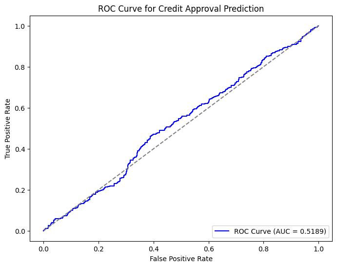
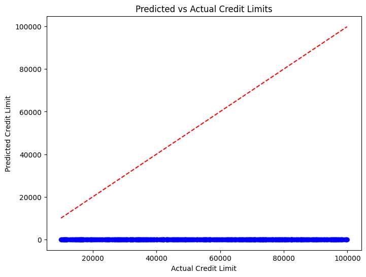
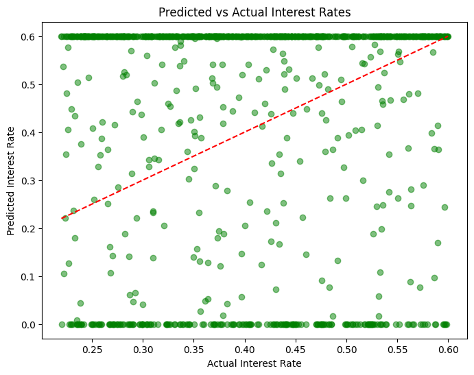
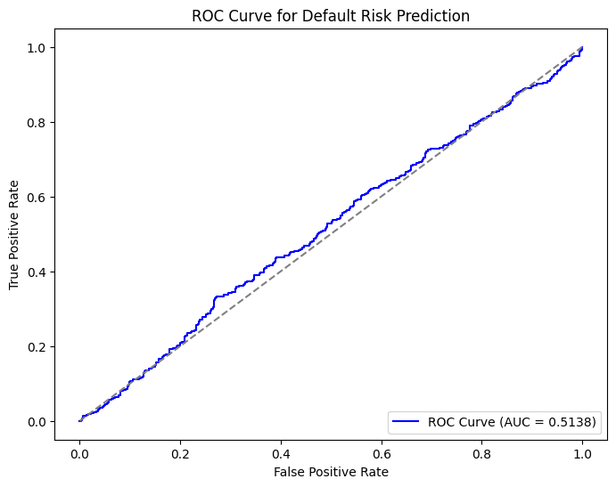
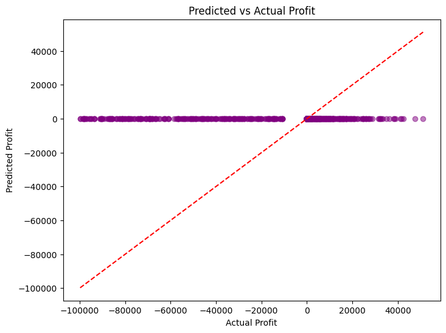

<!DOCTYPE html>


<html lang="en" data-content_root="./" >

  <head>
    <meta charset="utf-8" />
    <meta name="viewport" content="width=device-width, initial-scale=1.0" /><meta name="viewport" content="width=device-width, initial-scale=1" />

    <title>Credit Approval &#8212; Machine Learning in Python</title>
  
  
  
  <script data-cfasync="false">
    document.documentElement.dataset.mode = localStorage.getItem("mode") || "";
    document.documentElement.dataset.theme = localStorage.getItem("theme") || "light";
  </script>
  
  <!-- Loaded before other Sphinx assets -->
  <link href="_static/styles/theme.css?digest=8d27b9dea8ad943066ae" rel="stylesheet" />
<link href="_static/styles/bootstrap.css?digest=8d27b9dea8ad943066ae" rel="stylesheet" />
<link href="_static/styles/pydata-sphinx-theme.css?digest=8d27b9dea8ad943066ae" rel="stylesheet" />

  
  <link href="_static/vendor/fontawesome/6.5.1/css/all.min.css?digest=8d27b9dea8ad943066ae" rel="stylesheet" />
  <link rel="preload" as="font" type="font/woff2" crossorigin href="_static/vendor/fontawesome/6.5.1/webfonts/fa-solid-900.woff2" />
<link rel="preload" as="font" type="font/woff2" crossorigin href="_static/vendor/fontawesome/6.5.1/webfonts/fa-brands-400.woff2" />
<link rel="preload" as="font" type="font/woff2" crossorigin href="_static/vendor/fontawesome/6.5.1/webfonts/fa-regular-400.woff2" />

    <link rel="stylesheet" type="text/css" href="_static/pygments.css?v=1a96265c" />
    <link rel="stylesheet" type="text/css" href="_static/styles/sphinx-book-theme.css?v=384b581d" />
    <link rel="stylesheet" type="text/css" href="_static/togglebutton.css?v=13237357" />
    <link rel="stylesheet" type="text/css" href="_static/copybutton.css?v=76b2166b" />
    <link rel="stylesheet" type="text/css" href="_static/mystnb.4510f1fc1dee50b3e5859aac5469c37c29e427902b24a333a5f9fcb2f0b3ac41.css?v=be8a1c11" />
    <link rel="stylesheet" type="text/css" href="_static/sphinx-thebe.css?v=4fa983c6" />
    <link rel="stylesheet" type="text/css" href="_static/design-style.1e8bd061cd6da7fc9cf755528e8ffc24.min.css?v=0a3b3ea7" />
    <link rel="stylesheet" type="text/css" href="_static/basic.css?v=c72506b3" />
    <link rel="stylesheet" type="text/css" href="_static/copybutton.css?v=76b2166b" />
    <link rel="stylesheet" type="text/css" href="_static/design-style.1e8bd061cd6da7fc9cf755528e8ffc24.min.css?v=0a3b3ea7" />
    <link rel="stylesheet" type="text/css" href="_static/mystnb.4510f1fc1dee50b3e5859aac5469c37c29e427902b24a333a5f9fcb2f0b3ac41.css?v=be8a1c11" />
    <link rel="stylesheet" type="text/css" href="_static/pygments.css?v=1a96265c" />
    <link rel="stylesheet" type="text/css" href="_static/sphinx-thebe.css?v=4fa983c6" />
    <link rel="stylesheet" type="text/css" href="_static/togglebutton.css?v=13237357" />
    <link rel="stylesheet" type="text/css" href="_static/styles/bootstrap.css?v=5340d9b1" />
    <link rel="stylesheet" type="text/css" href="_static/styles/sphinx-book-theme.css?v=384b581d" />
    <link rel="stylesheet" type="text/css" href="_static/styles/theme.css?v=a243ae73" />
    <link rel="stylesheet" type="text/css" href="_static/vendor/fontawesome/6.5.1/css/all.min.css?v=c786f70d" />
  
  <!-- Pre-loaded scripts that we'll load fully later -->
  <link rel="preload" as="script" href="_static/scripts/bootstrap.js?digest=8d27b9dea8ad943066ae" />
<link rel="preload" as="script" href="_static/scripts/pydata-sphinx-theme.js?digest=8d27b9dea8ad943066ae" />
  <script src="_static/vendor/fontawesome/6.5.1/js/all.min.js?digest=8d27b9dea8ad943066ae"></script>

    <script src="_static/documentation_options.js?v=9eb32ce0"></script>
    <script src="_static/doctools.js?v=888ff710"></script>
    <script src="_static/sphinx_highlight.js?v=dc90522c"></script>
    <script src="_static/clipboard.min.js?v=a7894cd8"></script>
    <script src="_static/copybutton.js?v=f281be69"></script>
    <script src="_static/scripts/sphinx-book-theme.js?v=efea14e4"></script>
    <script>let toggleHintShow = 'Click to show';</script>
    <script>let toggleHintHide = 'Click to hide';</script>
    <script>let toggleOpenOnPrint = 'true';</script>
    <script src="_static/togglebutton.js?v=4a39c7ea"></script>
    <script>var togglebuttonSelector = '.toggle, .admonition.dropdown';</script>
    <script src="_static/design-tabs.js?v=36754332"></script>
    <script async="async" src="https://www.googletagmanager.com/gtag/js?id=G-NK1GQ8CXSN"></script>
    <script>
                window.dataLayer = window.dataLayer || [];
                function gtag(){ dataLayer.push(arguments); }
                gtag('js', new Date());
                gtag('config', 'G-NK1GQ8CXSN');
            </script>
    <script>const THEBE_JS_URL = "https://unpkg.com/thebe@0.8.2/lib/index.js"; const thebe_selector = ".thebe,.cell"; const thebe_selector_input = "pre"; const thebe_selector_output = ".output, .cell_output"</script>
    <script async="async" src="_static/sphinx-thebe.js?v=c100c467"></script>
    <script>var togglebuttonSelector = '.toggle, .admonition.dropdown';</script>
    <script>
                window.dataLayer = window.dataLayer || [];
                function gtag(){ dataLayer.push(arguments); }
                gtag('js', new Date());
                gtag('config', 'G-NK1GQ8CXSN');
            </script>
    <script>const THEBE_JS_URL = "https://unpkg.com/thebe@0.8.2/lib/index.js"; const thebe_selector = ".thebe,.cell"; const thebe_selector_input = "pre"; const thebe_selector_output = ".output, .cell_output"</script>
    <script>window.MathJax = {"options": {"processHtmlClass": "tex2jax_process|mathjax_process|math|output_area"}}</script>
    <script defer="defer" src="https://cdn.jsdelivr.net/npm/mathjax@3/es5/tex-mml-chtml.js"></script>
    <script>DOCUMENTATION_OPTIONS.pagename = 'credit-approval';</script>
    <script src="_static/clipboard.min.js?v=a7894cd8"></script>
    <script src="_static/copybutton.js?v=f281be69"></script>
    <script src="_static/copybutton_funcs.js?v=776a791e"></script>
    <script src="_static/design-tabs.js?v=36754332"></script>
    <script src="_static/doctools.js?v=888ff710"></script>
    <script src="_static/documentation_options.js?v=9eb32ce0"></script>
    <script src="_static/language_data.js?v=e49ba422"></script>
    <script src="_static/searchtools.js?v=d19c4805"></script>
    <script src="_static/sphinx-thebe.js?v=c100c467"></script>
    <script src="_static/sphinx_highlight.js?v=dc90522c"></script>
    <script src="_static/togglebutton.js?v=4a39c7ea"></script>
    <script src="_static/scripts/bootstrap.js?v=3d67b3b1"></script>
    <script src="_static/scripts/pydata-sphinx-theme.js?v=b2908668"></script>
    <script src="_static/scripts/sphinx-book-theme.js?v=efea14e4"></script>
    <script src="_static/vendor/fontawesome/6.5.1/js/all.min.js?v=95180707"></script>
    <link rel="canonical" href="https://mikenguyen13.github.io/mlpy/credit-approval.html" />
    <link rel="icon" href="_static/favicon.ico"/>
    <link rel="index" title="Index" href="genindex.html" />
    <link rel="search" title="Search" href="search.html" />
    <link rel="next" title="Credit Adjustment" href="credit-adjustment.html" />
    <link rel="prev" title="Multi-Armed Bandits" href="sim_dat_bandits.html" />
  <meta name="viewport" content="width=device-width, initial-scale=1"/>
  <meta name="docsearch:language" content="en"/>
  </head>
  
  
  <body data-bs-spy="scroll" data-bs-target=".bd-toc-nav" data-offset="180" data-bs-root-margin="0px 0px -60%" data-default-mode="">

  
  
  <a id="pst-skip-link" class="skip-link" href="#main-content">Skip to main content</a>
  
  <div id="pst-scroll-pixel-helper"></div>
  
  <button type="button" class="btn rounded-pill" id="pst-back-to-top">
    <i class="fa-solid fa-arrow-up"></i>
    Back to top
  </button>

  
  <input type="checkbox"
          class="sidebar-toggle"
          name="__primary"
          id="__primary"/>
  <label class="overlay overlay-primary" for="__primary"></label>
  
  <input type="checkbox"
          class="sidebar-toggle"
          name="__secondary"
          id="__secondary"/>
  <label class="overlay overlay-secondary" for="__secondary"></label>
  
  <div class="search-button__wrapper">
    <div class="search-button__overlay"></div>
    <div class="search-button__search-container">
<form class="bd-search d-flex align-items-center"
      action="search.html"
      method="get">
  <i class="fa-solid fa-magnifying-glass"></i>
  <input type="search"
         class="form-control"
         name="q"
         id="search-input"
         placeholder="Search this book..."
         aria-label="Search this book..."
         autocomplete="off"
         autocorrect="off"
         autocapitalize="off"
         spellcheck="false"/>
  <span class="search-button__kbd-shortcut"><kbd class="kbd-shortcut__modifier">Ctrl</kbd>+<kbd>K</kbd></span>
</form></div>
  </div>
  
    <header class="bd-header navbar navbar-expand-lg bd-navbar">
    </header>
  

  <div class="bd-container">
    <div class="bd-container__inner bd-page-width">
      
      
      
      <div class="bd-sidebar-primary bd-sidebar">
        

  
  <div class="sidebar-header-items sidebar-primary__section">
    
    
    
    
  </div>
  
    <div class="sidebar-primary-items__start sidebar-primary__section">
        <div class="sidebar-primary-item">

  

<a class="navbar-brand logo" href="intro.html">
  
  
  
  
  
    
    
      
    
    
    
    <script>document.write(``);</script>
  
  
</a></div>
        <div class="sidebar-primary-item">

 <script>
 document.write(`
   <button class="btn navbar-btn search-button-field search-button__button" title="Search" aria-label="Search" data-bs-placement="bottom" data-bs-toggle="tooltip">
    <i class="fa-solid fa-magnifying-glass"></i>
    <span class="search-button__default-text">Search</span>
    <span class="search-button__kbd-shortcut"><kbd class="kbd-shortcut__modifier">Ctrl</kbd>+<kbd class="kbd-shortcut__modifier">K</kbd></span>
   </button>
 `);
 </script></div>
        <div class="sidebar-primary-item"><nav class="bd-links bd-docs-nav" aria-label="Main">
    <div class="bd-toc-item navbar-nav active">
        
        <ul class="nav bd-sidenav bd-sidenav__home-link">
            <li class="toctree-l1">
                <a class="reference internal" href="intro.html">
                    Machine Learning in Python
                </a>
            </li>
        </ul>
        <p aria-level="2" class="caption" role="heading"><span class="caption-text">Theory</span></p>
<ul class="nav bd-sidenav">
<li class="toctree-l1"><a class="reference internal" href="_optimization.html">Optimization</a></li>
</ul>
<p aria-level="2" class="caption" role="heading"><span class="caption-text">Industry Applications</span></p>
<ul class="current nav bd-sidenav">
<li class="toctree-l1"><a class="reference internal" href="3-approximate-nearest-neighbors.html">Approximate Nearest Neighbors</a></li>
<li class="toctree-l1"><a class="reference internal" href="4-credit-score.html">Credit Score Model</a></li>
<li class="toctree-l1"><a class="reference internal" href="sim_dat_bandits.html">Multi-Armed Bandits</a></li>
<li class="toctree-l1 current active"><a class="current reference internal" href="#">Credit Approval</a></li>
<li class="toctree-l1"><a class="reference internal" href="credit-adjustment.html">Credit Adjustment</a></li>
<li class="toctree-l1"><a class="reference internal" href="firm-valuation.html">Firm Valuation</a></li>
</ul>

    </div>
</nav></div>
    </div>
  
  
  <div class="sidebar-primary-items__end sidebar-primary__section">
  </div>
  
  <div id="rtd-footer-container"></div>


      </div>
      
      <main id="main-content" class="bd-main">
        
        

<div class="sbt-scroll-pixel-helper"></div>

          <div class="bd-content">
            <div class="bd-article-container">
              
              <div class="bd-header-article">
<div class="header-article-items header-article__inner">
  
    <div class="header-article-items__start">
      
        <div class="header-article-item"><label class="sidebar-toggle primary-toggle btn btn-sm" for="__primary" title="Toggle primary sidebar" data-bs-placement="bottom" data-bs-toggle="tooltip">
  <span class="fa-solid fa-bars"></span>
</label></div>
      
    </div>
  
  
    <div class="header-article-items__end">
      
        <div class="header-article-item">

<div class="article-header-buttons">


<div class="dropdown dropdown-source-buttons">
  <button class="btn dropdown-toggle" type="button" data-bs-toggle="dropdown" aria-expanded="false" aria-label="Source repositories">
    <i class="fab fa-github"></i>
  </button>
  <ul class="dropdown-menu">
      
      
      
      <li><a href="https://github.com/mikenguyen13/mlpy" target="_blank"
   class="btn btn-sm btn-source-repository-button dropdown-item"
   title="Source repository"
   data-bs-placement="left" data-bs-toggle="tooltip"
>
  

<span class="btn__icon-container">
  <i class="fab fa-github"></i>
  </span>
<span class="btn__text-container">Repository</span>
</a>
</li>
      
      
      
      
      <li><a href="https://github.com/mikenguyen13/mlpy/edit/main/credit-approval.ipynb" target="_blank"
   class="btn btn-sm btn-source-edit-button dropdown-item"
   title="Suggest edit"
   data-bs-placement="left" data-bs-toggle="tooltip"
>
  

<span class="btn__icon-container">
  <i class="fas fa-pencil-alt"></i>
  </span>
<span class="btn__text-container">Suggest edit</span>
</a>
</li>
      
      
      
      
      <li><a href="https://github.com/mikenguyen13/mlpy/issues/new?title=Issue%20on%20page%20%2Fcredit-approval.html&body=Your%20issue%20content%20here." target="_blank"
   class="btn btn-sm btn-source-issues-button dropdown-item"
   title="Open an issue"
   data-bs-placement="left" data-bs-toggle="tooltip"
>
  

<span class="btn__icon-container">
  <i class="fas fa-lightbulb"></i>
  </span>
<span class="btn__text-container">Open issue</span>
</a>
</li>
      
  </ul>
</div>


<div class="dropdown dropdown-download-buttons">
  <button class="btn dropdown-toggle" type="button" data-bs-toggle="dropdown" aria-expanded="false" aria-label="Download this page">
    <i class="fas fa-download"></i>
  </button>
  <ul class="dropdown-menu">
      
      
      
      <li><a href="_sources/credit-approval.ipynb" target="_blank"
   class="btn btn-sm btn-download-source-button dropdown-item"
   title="Download source file"
   data-bs-placement="left" data-bs-toggle="tooltip"
>
  

<span class="btn__icon-container">
  <i class="fas fa-file"></i>
  </span>
<span class="btn__text-container">.ipynb</span>
</a>
</li>
      
      
      
      
      <li>
<button onclick="window.print()"
  class="btn btn-sm btn-download-pdf-button dropdown-item"
  title="Print to PDF"
  data-bs-placement="left" data-bs-toggle="tooltip"
>
  

<span class="btn__icon-container">
  <i class="fas fa-file-pdf"></i>
  </span>
<span class="btn__text-container">.pdf</span>
</button>
</li>
      
  </ul>
</div>


<button onclick="toggleFullScreen()"
  class="btn btn-sm btn-fullscreen-button"
  title="Fullscreen mode"
  data-bs-placement="bottom" data-bs-toggle="tooltip"
>
  

<span class="btn__icon-container">
  <i class="fas fa-expand"></i>
  </span>

</button>


<script>
document.write(`
  <button class="btn btn-sm navbar-btn theme-switch-button" title="light/dark" aria-label="light/dark" data-bs-placement="bottom" data-bs-toggle="tooltip">
    <span class="theme-switch nav-link" data-mode="light"><i class="fa-solid fa-sun fa-lg"></i></span>
    <span class="theme-switch nav-link" data-mode="dark"><i class="fa-solid fa-moon fa-lg"></i></span>
    <span class="theme-switch nav-link" data-mode="auto"><i class="fa-solid fa-circle-half-stroke fa-lg"></i></span>
  </button>
`);
</script>


<script>
document.write(`
  <button class="btn btn-sm navbar-btn search-button search-button__button" title="Search" aria-label="Search" data-bs-placement="bottom" data-bs-toggle="tooltip">
    <i class="fa-solid fa-magnifying-glass fa-lg"></i>
  </button>
`);
</script>
<label class="sidebar-toggle secondary-toggle btn btn-sm" for="__secondary"title="Toggle secondary sidebar" data-bs-placement="bottom" data-bs-toggle="tooltip">
    <span class="fa-solid fa-list"></span>
</label>
</div></div>
      
    </div>
  
</div>
</div>
              
              

<div id="jb-print-docs-body" class="onlyprint">
    <h1>Credit Approval</h1>
    <!-- Table of contents -->
    <div id="print-main-content">
        <div id="jb-print-toc">
            
            <div>
                <h2> Contents </h2>
            </div>
            <nav aria-label="Page">
                <ul class="visible nav section-nav flex-column">
<li class="toc-h2 nav-item toc-entry"><a class="reference internal nav-link" href="#understanding-the-problem">Understanding the Problem</a></li>
<li class="toc-h2 nav-item toc-entry"><a class="reference internal nav-link" href="#data-simulation">Data Simulation</a></li>
<li class="toc-h2 nav-item toc-entry"><a class="reference internal nav-link" href="#model-architecture">Model Architecture</a><ul class="nav section-nav flex-column">
<li class="toc-h3 nav-item toc-entry"><a class="reference internal nav-link" href="#input-and-shared-layers">Input and Shared Layers</a></li>
<li class="toc-h3 nav-item toc-entry"><a class="reference internal nav-link" href="#output-layers-for-different-predictions">Output Layers for Different Predictions</a></li>
<li class="toc-h3 nav-item toc-entry"><a class="reference internal nav-link" href="#custom-loss-function-for-profit-optimization">Custom Loss Function for Profit Optimization</a><ul class="nav section-nav flex-column">
<li class="toc-h4 nav-item toc-entry"><a class="reference internal nav-link" href="#breakdown-of-the-loss-function">Breakdown of the Loss Function</a></li>
<li class="toc-h4 nav-item toc-entry"><a class="reference internal nav-link" href="#explanation">Explanation</a></li>
</ul>
</li>
<li class="toc-h3 nav-item toc-entry"><a class="reference internal nav-link" href="#model-compilation-and-training">Model Compilation and Training</a></li>
</ul>
</li>
<li class="toc-h2 nav-item toc-entry"><a class="reference internal nav-link" href="#model-evaluation">Model Evaluation</a><ul class="nav section-nav flex-column">
<li class="toc-h3 nav-item toc-entry"><a class="reference internal nav-link" href="#prediction-and-counterfactual-analysis">Prediction and Counterfactual Analysis</a></li>
<li class="toc-h3 nav-item toc-entry"><a class="reference internal nav-link" href="#credit-approval-prediction-evaluation">Credit Approval Prediction Evaluation</a></li>
<li class="toc-h3 nav-item toc-entry"><a class="reference internal nav-link" href="#credit-limit-prediction-evaluation">Credit Limit Prediction Evaluation</a></li>
<li class="toc-h3 nav-item toc-entry"><a class="reference internal nav-link" href="#interest-rate-prediction-evaluation">Interest Rate Prediction Evaluation</a></li>
<li class="toc-h3 nav-item toc-entry"><a class="reference internal nav-link" href="#default-risk-prediction-evaluation">Default Risk Prediction Evaluation</a></li>
<li class="toc-h3 nav-item toc-entry"><a class="reference internal nav-link" href="#profit-evaluation">Profit Evaluation</a></li>
<li class="toc-h3 nav-item toc-entry"><a class="reference internal nav-link" href="#out-of-sample-testing-holdout-set-or-deployment">Out-of-Sample Testing (Holdout Set or Deployment)</a></li>
</ul>
</li>
</ul>
            </nav>
        </div>
    </div>
</div>

              
                
<div id="searchbox"></div>
                <article class="bd-article">
                  
  <section class="tex2jax_ignore mathjax_ignore" id="credit-approval">
<h1>Credit Approval<a class="headerlink" href="#credit-approval" title="Link to this heading">#</a></h1>
<p>This chapter explains the development of a custom deep learning model aimed at optimizing credit decisions for a financial institution. The primary objective of this model is to predict credit-related outcomes like approval status, credit limit, interest rate, and default risk. Furthermore, we aim to maximize profits while managing risks. This requires careful design of a custom loss function that balances profitability and credit risk.</p>
<p>Let’s break down the process.</p>
<section id="understanding-the-problem">
<h2>Understanding the Problem<a class="headerlink" href="#understanding-the-problem" title="Link to this heading">#</a></h2>
<p><strong>Business Objectives</strong></p>
<p>The institution wants to:</p>
<ol class="arabic simple">
<li><p><strong>Approve credit for customers</strong>: Decide which customers should receive credit.</p></li>
<li><p><strong>Set credit limits</strong>: Decide the maximum amount of credit for approved customers.</p></li>
<li><p><strong>Assign interest rates</strong>: Set a suitable interest rate based on the customer’s risk profile.</p></li>
<li><p><strong>Predict default risks</strong>: Estimate the probability that a customer might default on their credit.</p></li>
<li><p><strong>Optimize profits</strong>: Use the model to maximize profit by accurately predicting the right credit terms and avoiding high-risk customers.
The institution profits by charging interest on approved credit, but it incurs losses when customers default on their payments. Therefore, optimizing profits requires balancing between generating interest (revenue) and avoiding defaults (costs).</p></li>
</ol>
<p>The institution profits by charging interest on approved credit, but it incurs losses when customers default on their payments. Therefore, optimizing profits requires balancing between generating interest (revenue) and avoiding defaults (costs).</p>
</section>
<section id="data-simulation">
<h2>Data Simulation<a class="headerlink" href="#data-simulation" title="Link to this heading">#</a></h2>
<p>We created synthetic data to simulate customer behavior and credit-related factors. The dataset includes variables such as whether the customer was approved for credit, the credit limit they received, the interest rate applied, whether they defaulted, and the utilization rate (the proportion of the credit limit that the customer uses).</p>
<p>Here’s a look at the data preparation:</p>
<div class="cell docutils container">
<div class="cell_input docutils container">
<div class="highlight-ipython3 notranslate"><div class="highlight"><pre><span></span><span class="kn">import</span> <span class="nn">numpy</span> <span class="k">as</span> <span class="nn">np</span>
<span class="kn">import</span> <span class="nn">pandas</span> <span class="k">as</span> <span class="nn">pd</span>
<span class="kn">from</span> <span class="nn">sklearn.preprocessing</span> <span class="kn">import</span> <span class="n">StandardScaler</span>

<span class="c1"># Set the seed for reproducibility</span>
<span class="n">np</span><span class="o">.</span><span class="n">random</span><span class="o">.</span><span class="n">seed</span><span class="p">(</span><span class="mi">42</span><span class="p">)</span>

<span class="c1"># Generating synthetic data</span>
<span class="n">num_samples</span> <span class="o">=</span> <span class="mi">1000</span>
<span class="n">X</span> <span class="o">=</span> <span class="n">np</span><span class="o">.</span><span class="n">random</span><span class="o">.</span><span class="n">rand</span><span class="p">(</span>
    <span class="n">num_samples</span><span class="p">,</span> <span class="mi">2</span>
<span class="p">)</span>  <span class="c1"># Customer features (e.g., telecom data, demographics)</span>
<span class="n">y_approved</span> <span class="o">=</span> <span class="n">np</span><span class="o">.</span><span class="n">random</span><span class="o">.</span><span class="n">randint</span><span class="p">(</span><span class="mi">0</span><span class="p">,</span> <span class="mi">2</span><span class="p">,</span> <span class="n">size</span><span class="o">=</span><span class="p">(</span><span class="n">num_samples</span><span class="p">,</span> <span class="mi">1</span><span class="p">))</span>  <span class="c1"># Approval status</span>
<span class="n">y_credit_limit</span> <span class="o">=</span> <span class="p">(</span>
    <span class="n">np</span><span class="o">.</span><span class="n">random</span><span class="o">.</span><span class="n">rand</span><span class="p">(</span><span class="n">num_samples</span><span class="p">,</span> <span class="mi">1</span><span class="p">)</span> <span class="o">*</span> <span class="p">(</span><span class="mi">100000</span> <span class="o">-</span> <span class="mi">10000</span><span class="p">)</span> <span class="o">+</span> <span class="mi">10000</span>
<span class="p">)</span>  <span class="c1"># Credit limit between 10,000 to 100,000</span>
<span class="n">y_interest_rate</span> <span class="o">=</span> <span class="p">(</span>
    <span class="n">np</span><span class="o">.</span><span class="n">random</span><span class="o">.</span><span class="n">rand</span><span class="p">(</span><span class="n">num_samples</span><span class="p">,</span> <span class="mi">1</span><span class="p">)</span> <span class="o">*</span> <span class="p">(</span><span class="mf">0.60</span> <span class="o">-</span> <span class="mf">0.22</span><span class="p">)</span> <span class="o">+</span> <span class="mf">0.22</span>
<span class="p">)</span>  <span class="c1"># Interest rate from 22% to 60%</span>
<span class="n">y_defaulted</span> <span class="o">=</span> <span class="n">np</span><span class="o">.</span><span class="n">random</span><span class="o">.</span><span class="n">randint</span><span class="p">(</span><span class="mi">0</span><span class="p">,</span> <span class="mi">2</span><span class="p">,</span> <span class="n">size</span><span class="o">=</span><span class="p">(</span><span class="n">num_samples</span><span class="p">,</span> <span class="mi">1</span><span class="p">))</span>  <span class="c1"># Default status (0 or 1)</span>
<span class="n">y_repayment</span> <span class="o">=</span> <span class="mi">1</span> <span class="o">-</span> <span class="n">y_defaulted</span>  <span class="c1"># Repayment probability (inverse of default)</span>
<span class="n">y_utilization_rate</span> <span class="o">=</span> <span class="n">np</span><span class="o">.</span><span class="n">random</span><span class="o">.</span><span class="n">rand</span><span class="p">(</span><span class="n">num_samples</span><span class="p">,</span> <span class="mi">1</span><span class="p">)</span>  <span class="c1"># Credit utilization rate (0 to 1)</span>

<span class="c1"># Profit calculation based on observed data (for approved customers)</span>
<span class="n">y_profit</span> <span class="o">=</span> <span class="n">y_approved</span> <span class="o">*</span> <span class="p">(</span>
    <span class="p">(</span><span class="n">y_credit_limit</span> <span class="o">*</span> <span class="n">y_interest_rate</span> <span class="o">*</span> <span class="n">y_utilization_rate</span> <span class="o">*</span> <span class="n">y_repayment</span><span class="p">)</span>
    <span class="o">-</span> <span class="p">(</span><span class="n">y_credit_limit</span> <span class="o">*</span> <span class="n">y_defaulted</span><span class="p">)</span>
<span class="p">)</span>

<span class="n">observed</span> <span class="o">=</span> <span class="n">pd</span><span class="o">.</span><span class="n">DataFrame</span><span class="p">(</span>
    <span class="p">{</span>
        <span class="s2">&quot;Approved&quot;</span><span class="p">:</span> <span class="n">y_approved</span><span class="o">.</span><span class="n">flatten</span><span class="p">(),</span>
        <span class="s2">&quot;Credit_Limit&quot;</span><span class="p">:</span> <span class="n">y_credit_limit</span><span class="o">.</span><span class="n">flatten</span><span class="p">(),</span>
        <span class="s2">&quot;Interest_Rate&quot;</span><span class="p">:</span> <span class="n">y_interest_rate</span><span class="o">.</span><span class="n">flatten</span><span class="p">(),</span>
        <span class="s2">&quot;Defaulted&quot;</span><span class="p">:</span> <span class="n">y_defaulted</span><span class="o">.</span><span class="n">flatten</span><span class="p">(),</span>
        <span class="s2">&quot;Repayment_Prob&quot;</span><span class="p">:</span> <span class="n">y_repayment</span><span class="o">.</span><span class="n">flatten</span><span class="p">(),</span>
        <span class="s2">&quot;Utilization_Rate&quot;</span><span class="p">:</span> <span class="n">y_utilization_rate</span><span class="o">.</span><span class="n">flatten</span><span class="p">(),</span>
        <span class="s2">&quot;Profit&quot;</span><span class="p">:</span> <span class="n">y_profit</span><span class="o">.</span><span class="n">flatten</span><span class="p">(),</span>
    <span class="p">}</span>
<span class="p">)</span>

<span class="c1"># Scale the input data for better convergence</span>
<span class="n">scaler</span> <span class="o">=</span> <span class="n">StandardScaler</span><span class="p">()</span>
<span class="n">X_scaled</span> <span class="o">=</span> <span class="n">scaler</span><span class="o">.</span><span class="n">fit_transform</span><span class="p">(</span><span class="n">X</span><span class="p">)</span>
</pre></div>
</div>
</div>
</div>
<p><strong>Key Variables</strong></p>
<ul class="simple">
<li><p>Customer features (X): These are random values representing two customer characteristics (such as demographics or telecom data).</p></li>
<li><p><code class="docutils literal notranslate"><span class="pre">y_approved</span></code>: Binary variable (0 or 1) indicating whether the customer was approved for credit.</p></li>
<li><p><code class="docutils literal notranslate"><span class="pre">y_credit_limit</span></code>: The amount of credit granted to the customer, ranging between 10,000 and 100,000.</p></li>
<li><p><code class="docutils literal notranslate"><span class="pre">y_interest_rate</span></code>: The interest rate charged to the customer, which ranges from 22% to 60%.</p></li>
<li><p><code class="docutils literal notranslate"><span class="pre">y_defaulted</span></code>: Binary variable (0 or 1) indicating whether the customer defaulted on their credit.</p></li>
<li><p><code class="docutils literal notranslate"><span class="pre">y_repayment</span></code>: The repayment probability, calculated as the inverse of the default status (i.e., 1 - y_defaulted).</p></li>
<li><p><code class="docutils literal notranslate"><span class="pre">y_utilization_rate</span></code>: A random number between 0 and 1, representing the proportion of the credit limit that the customer actually uses.</p></li>
</ul>
<p><strong>Profit Calculation</strong></p>
<p>Profit is calculated only for customers who were approved for credit. It is computed as:</p>
<p>Profit= (Credit Limit x Interest Rate x Utilization Rate x Repayment Probability) − (Credit Limit x Defaulted)</p>
<p>This equation reflects that profit depends on:</p>
<ul class="simple">
<li><p>How much of the credit limit is utilized by the customer (utilization rate).</p></li>
<li><p>The interest charged on that utilization.</p></li>
<li><p>The repayment probability (since profit is lost if the customer defaults).</p></li>
</ul>
</section>
<section id="model-architecture">
<h2>Model Architecture<a class="headerlink" href="#model-architecture" title="Link to this heading">#</a></h2>
<section id="input-and-shared-layers">
<h3>Input and Shared Layers<a class="headerlink" href="#input-and-shared-layers" title="Link to this heading">#</a></h3>
<p>We start by defining the input features and creating a series of shared layers. These shared layers extract common representations from the customer data (like customer demographics, spending patterns, etc.) before making predictions.</p>
<div class="cell docutils container">
<div class="cell_input docutils container">
<div class="highlight-ipython3 notranslate"><div class="highlight"><pre><span></span><span class="kn">from</span> <span class="nn">tensorflow.keras.layers</span> <span class="kn">import</span> <span class="n">Input</span><span class="p">,</span> <span class="n">Dense</span>
<span class="kn">from</span> <span class="nn">tensorflow.keras.models</span> <span class="kn">import</span> <span class="n">Model</span>
<span class="kn">from</span> <span class="nn">tensorflow.keras.layers</span> <span class="kn">import</span> <span class="n">Dropout</span>

<span class="n">input_layer</span> <span class="o">=</span> <span class="n">Input</span><span class="p">(</span><span class="n">shape</span><span class="o">=</span><span class="p">(</span><span class="n">X_scaled</span><span class="o">.</span><span class="n">shape</span><span class="p">[</span><span class="mi">1</span><span class="p">],))</span>  <span class="c1"># Input for customer features</span>
<span class="n">shared</span> <span class="o">=</span> <span class="n">Dense</span><span class="p">(</span><span class="mi">64</span><span class="p">,</span> <span class="n">activation</span><span class="o">=</span><span class="s1">&#39;relu&#39;</span><span class="p">,</span> <span class="n">kernel_initializer</span><span class="o">=</span><span class="s1">&#39;he_normal&#39;</span><span class="p">)(</span><span class="n">input_layer</span><span class="p">)</span>
<span class="c1"># Regularization to Prevent Overfitting</span>
<span class="c1"># Dropout Layers</span>
<span class="c1"># Dropout is a regularization technique that </span>
<span class="c1"># randomly drops neurons during training to make the model more robust.</span>
<span class="c1"># shared = Dropout(0.5)(shared)  # Drop 50% of the neurons during training</span>
<span class="n">shared</span> <span class="o">=</span> <span class="n">Dense</span><span class="p">(</span><span class="mi">32</span><span class="p">,</span> <span class="n">activation</span><span class="o">=</span><span class="s1">&#39;relu&#39;</span><span class="p">,</span> <span class="n">kernel_initializer</span><span class="o">=</span><span class="s1">&#39;he_normal&#39;</span><span class="p">)(</span><span class="n">shared</span><span class="p">)</span>
</pre></div>
</div>
</div>
</div>
<ul class="simple">
<li><p><strong>Input layer</strong>: Takes the customer features as input.</p></li>
<li><p><strong>Shared layers</strong>: Dense layers with ReLU activation, which allow the model to learn common patterns from the customer data before making predictions for the individual tasks.</p></li>
</ul>
</section>
<section id="output-layers-for-different-predictions">
<h3>Output Layers for Different Predictions<a class="headerlink" href="#output-layers-for-different-predictions" title="Link to this heading">#</a></h3>
<p>We create specific output layers for each prediction task:</p>
<div class="cell docutils container">
<div class="cell_input docutils container">
<div class="highlight-ipython3 notranslate"><div class="highlight"><pre><span></span><span class="kn">from</span> <span class="nn">tensorflow.keras.layers</span> <span class="kn">import</span> <span class="n">Input</span><span class="p">,</span> <span class="n">Dense</span><span class="p">,</span> <span class="n">Concatenate</span>

<span class="n">approval_output</span> <span class="o">=</span> <span class="n">Dense</span><span class="p">(</span><span class="mi">1</span><span class="p">,</span> <span class="n">activation</span><span class="o">=</span><span class="s2">&quot;sigmoid&quot;</span><span class="p">,</span> <span class="n">name</span><span class="o">=</span><span class="s2">&quot;approved&quot;</span><span class="p">)(</span>
    <span class="n">shared</span>
<span class="p">)</span>  <span class="c1"># Predict approval</span>
<span class="n">credit_limit_output</span> <span class="o">=</span> <span class="n">Dense</span><span class="p">(</span><span class="mi">1</span><span class="p">,</span> <span class="n">activation</span><span class="o">=</span><span class="s2">&quot;linear&quot;</span><span class="p">,</span> <span class="n">name</span><span class="o">=</span><span class="s2">&quot;creditlimit&quot;</span><span class="p">)(</span>
    <span class="n">shared</span>
<span class="p">)</span>  <span class="c1"># Predict credit limit</span>
<span class="n">interest_rate_output</span> <span class="o">=</span> <span class="n">Dense</span><span class="p">(</span><span class="mi">1</span><span class="p">,</span> <span class="n">activation</span><span class="o">=</span><span class="s2">&quot;linear&quot;</span><span class="p">,</span> <span class="n">name</span><span class="o">=</span><span class="s2">&quot;interestrate&quot;</span><span class="p">)(</span>
    <span class="n">shared</span>
<span class="p">)</span>  <span class="c1"># Predict interest rate</span>
<span class="n">default_risk_output</span> <span class="o">=</span> <span class="n">Dense</span><span class="p">(</span><span class="mi">1</span><span class="p">,</span> <span class="n">activation</span><span class="o">=</span><span class="s2">&quot;sigmoid&quot;</span><span class="p">,</span> <span class="n">name</span><span class="o">=</span><span class="s2">&quot;defaultrisk&quot;</span><span class="p">)(</span>
    <span class="n">shared</span>
<span class="p">)</span>  <span class="c1"># Predict default risk</span>
<span class="n">repayment_output</span> <span class="o">=</span> <span class="n">Dense</span><span class="p">(</span><span class="mi">1</span><span class="p">,</span> <span class="n">activation</span><span class="o">=</span><span class="s2">&quot;sigmoid&quot;</span><span class="p">,</span> <span class="n">name</span><span class="o">=</span><span class="s2">&quot;repayment&quot;</span><span class="p">)(</span>
    <span class="n">shared</span>
<span class="p">)</span>  <span class="c1"># Predict repayment probability</span>
<span class="n">utilization_rate_output</span> <span class="o">=</span> <span class="n">Dense</span><span class="p">(</span><span class="mi">1</span><span class="p">,</span> <span class="n">activation</span><span class="o">=</span><span class="s2">&quot;sigmoid&quot;</span><span class="p">,</span> <span class="n">name</span><span class="o">=</span><span class="s2">&quot;utilizationrate&quot;</span><span class="p">)(</span>
    <span class="n">shared</span>
<span class="p">)</span>  <span class="c1"># Predict utilization rate</span>

<span class="c1"># Concatenate predicted outputs for custom loss</span>
<span class="n">predicted_values_task1</span> <span class="o">=</span> <span class="n">Concatenate</span><span class="p">()(</span>
    <span class="p">[</span>
        <span class="n">approval_output</span><span class="p">,</span>
        <span class="n">credit_limit_output</span><span class="p">,</span>
        <span class="n">interest_rate_output</span><span class="p">,</span>
        <span class="n">default_risk_output</span><span class="p">,</span>
        <span class="n">repayment_output</span><span class="p">,</span>
        <span class="n">utilization_rate_output</span><span class="p">,</span>
    <span class="p">]</span>
<span class="p">)</span>
</pre></div>
</div>
</div>
</div>
<ul class="simple">
<li><p>Approval prediction (<code class="docutils literal notranslate"><span class="pre">approval_output</span></code>): Uses a sigmoid activation because it’s a binary classification problem (approve or not).</p></li>
<li><p>Credit limit prediction (<code class="docutils literal notranslate"><span class="pre">credit_limit_output</span></code>): Uses a linear activation because the credit limit is a continuous variable.</p></li>
<li><p>Interest rate prediction (<code class="docutils literal notranslate"><span class="pre">interest_rate_output</span></code>): Similarly, uses linear activation for flexibility in predicting continuous values.</p></li>
<li><p>Default risk prediction (<code class="docutils literal notranslate"><span class="pre">default_risk_output</span></code>) and repayment prediction (<code class="docutils literal notranslate"><span class="pre">repayment_output</span></code>): These use sigmoid activation since they are probabilities.</p></li>
<li><p>Utilization rate prediction (<code class="docutils literal notranslate"><span class="pre">utilization_rate_output</span></code>): Predicts a value between 0 and 1, which is the proportion of the credit limit that the customer uses.</p></li>
</ul>
</section>
<section id="custom-loss-function-for-profit-optimization">
<h3>Custom Loss Function for Profit Optimization<a class="headerlink" href="#custom-loss-function-for-profit-optimization" title="Link to this heading">#</a></h3>
<p>The core of this algorithm lies in optimizing profit while managing risk. We define a custom loss function that helps us maximize profit. This function factors in both the revenue (from interest) and the cost (from defaults). The overall goal is to maximize the difference between revenue and cost, which equates to maximizing profit.</p>
<ol class="arabic simple">
<li><p><strong>Average Daily Balance (ADB):</strong></p>
<ul class="simple">
<li><p><code class="docutils literal notranslate"><span class="pre">Avg</span> <span class="pre">Daily</span> <span class="pre">Balance</span> <span class="pre">=</span> <span class="pre">Pred</span> <span class="pre">Credit</span> <span class="pre">Limit</span> <span class="pre">x</span> <span class="pre">Pred</span> <span class="pre">Utilization</span> <span class="pre">Rate</span></code></p></li>
</ul>
</li>
<li><p><strong>Daily Interest Rate:</strong></p>
<ul class="simple">
<li><p><code class="docutils literal notranslate"><span class="pre">daily_interest_rate</span> <span class="pre">=</span> <span class="pre">pred_interest_rate</span> <span class="pre">/</span> <span class="pre">365</span></code></p></li>
</ul>
</li>
<li><p><strong>Interest Calculation:</strong></p>
<ul class="simple">
<li><p><code class="docutils literal notranslate"><span class="pre">interest</span> <span class="pre">=</span> <span class="pre">avg_daily_balance</span> <span class="pre">*</span> <span class="pre">daily_interest_rate</span> <span class="pre">*</span> <span class="pre">days_in_lookahead</span></code></p></li>
</ul>
</li>
<li><p><strong>Revenue:</strong></p>
<ul class="simple">
<li><p><code class="docutils literal notranslate"><span class="pre">revenue</span> <span class="pre">=</span> <span class="pre">interest</span> <span class="pre">*</span> <span class="pre">repayment_prob</span></code></p></li>
</ul>
</li>
<li><p><strong>Cost:</strong></p>
<ul class="simple">
<li><p><code class="docutils literal notranslate"><span class="pre">cost</span> <span class="pre">=</span> <span class="pre">credit_limit</span> <span class="pre">*</span> <span class="pre">default_risk</span></code></p></li>
</ul>
</li>
<li><p><strong>Profit:</strong></p>
<ul class="simple">
<li><p>`profit = <em>Profit:</em>*
$<span class="math notranslate nohighlight">\(
\text{profit} = \text{revenue} - \text{cost}
\)</span>$</p></li>
</ul>
</li>
</ol>
<section id="breakdown-of-the-loss-function">
<h4>Breakdown of the Loss Function<a class="headerlink" href="#breakdown-of-the-loss-function" title="Link to this heading">#</a></h4>
<div class="cell docutils container">
<div class="cell_input docutils container">
<div class="highlight-ipython3 notranslate"><div class="highlight"><pre><span></span><span class="kn">import</span> <span class="nn">tensorflow</span> <span class="k">as</span> <span class="nn">tf</span>

<span class="c1"># User-defined parameters for constraints</span>
<span class="n">lookahead_months</span> <span class="o">=</span> <span class="mi">6</span>  <span class="c1"># Example: looking ahead 6 months</span>
<span class="n">days_in_lookahead</span> <span class="o">=</span> <span class="n">lookahead_months</span> <span class="o">*</span> <span class="mi">30</span>  <span class="c1"># Approximate number of days in the lookahead period</span>
<span class="n">max_credit_limit</span> <span class="o">=</span> <span class="mi">100000</span>  <span class="c1"># Maximum credit limit</span>
<span class="n">min_credit_limit</span> <span class="o">=</span> <span class="mi">10000</span>  <span class="c1"># Minimum credit limit</span>
<span class="n">max_interest_rate</span> <span class="o">=</span> <span class="mf">0.6</span>  <span class="c1"># Maximum interest rate</span>
<span class="n">min_interest_rate</span> <span class="o">=</span> <span class="mf">0.22</span> <span class="c1"># Minimum interest rate </span>

<span class="k">def</span> <span class="nf">task1_custom_loss</span><span class="p">(</span><span class="n">y_true</span><span class="p">,</span> <span class="n">y_pred</span><span class="p">):</span>
    <span class="c1"># Ground truth values</span>
    <span class="n">true_approved</span> <span class="o">=</span> <span class="n">y_true</span><span class="p">[:,</span> <span class="mi">0</span><span class="p">]</span>  
    <span class="n">true_credit_limit</span> <span class="o">=</span> <span class="n">y_true</span><span class="p">[:,</span> <span class="mi">1</span><span class="p">]</span>  
    <span class="n">true_interest_rate</span> <span class="o">=</span> <span class="n">y_true</span><span class="p">[:,</span> <span class="mi">2</span><span class="p">]</span>  
    <span class="n">true_defaulted</span> <span class="o">=</span> <span class="n">y_true</span><span class="p">[:,</span> <span class="mi">3</span><span class="p">]</span>  
    <span class="n">true_repayment</span> <span class="o">=</span> <span class="n">y_true</span><span class="p">[:,</span> <span class="mi">4</span><span class="p">]</span>  
    <span class="n">true_utilization_rate</span> <span class="o">=</span> <span class="n">y_true</span><span class="p">[:,</span> <span class="mi">5</span><span class="p">]</span>  

    <span class="c1"># Predictions</span>
    <span class="n">pred_approval_prob</span> <span class="o">=</span> <span class="n">y_pred</span><span class="p">[:,</span> <span class="mi">0</span><span class="p">]</span>  
    <span class="n">pred_credit_limit</span> <span class="o">=</span> <span class="n">tf</span><span class="o">.</span><span class="n">minimum</span><span class="p">(</span><span class="n">tf</span><span class="o">.</span><span class="n">maximum</span><span class="p">(</span><span class="n">y_pred</span><span class="p">[:,</span> <span class="mi">1</span><span class="p">],</span> <span class="n">min_credit_limit</span><span class="p">),</span> <span class="n">max_credit_limit</span><span class="p">)</span>
    <span class="n">pred_interest_rate</span> <span class="o">=</span> <span class="n">tf</span><span class="o">.</span><span class="n">minimum</span><span class="p">(</span><span class="n">tf</span><span class="o">.</span><span class="n">maximum</span><span class="p">(</span><span class="n">y_pred</span><span class="p">[:,</span> <span class="mi">2</span><span class="p">],</span> <span class="n">min_interest_rate</span><span class="p">),</span> <span class="n">max_interest_rate</span><span class="p">)</span>
    <span class="n">pred_default_risk</span> <span class="o">=</span> <span class="n">y_pred</span><span class="p">[:,</span> <span class="mi">3</span><span class="p">]</span>
    <span class="n">pred_repayment</span> <span class="o">=</span> <span class="n">y_pred</span><span class="p">[:,</span> <span class="mi">4</span><span class="p">]</span>
    <span class="n">pred_utilization_rate</span> <span class="o">=</span> <span class="n">tf</span><span class="o">.</span><span class="n">clip_by_value</span><span class="p">(</span><span class="n">y_pred</span><span class="p">[:,</span> <span class="mi">5</span><span class="p">],</span> <span class="mi">0</span><span class="p">,</span> <span class="mi">1</span><span class="p">)</span>

    <span class="c1"># Calculate Average Daily Balance (ADB)</span>
    <span class="n">avg_daily_balance</span> <span class="o">=</span> <span class="n">pred_credit_limit</span> <span class="o">*</span> <span class="n">pred_utilization_rate</span>

    <span class="c1"># Calculate daily interest rate</span>
    <span class="n">daily_interest_rate</span> <span class="o">=</span> <span class="n">pred_interest_rate</span> <span class="o">/</span> <span class="mi">365</span>

    <span class="c1"># Revenue is interest payments over the lookahead period</span>
    <span class="n">interest</span> <span class="o">=</span> <span class="n">avg_daily_balance</span> <span class="o">*</span> <span class="n">daily_interest_rate</span> <span class="o">*</span> <span class="n">days_in_lookahead</span>
    <span class="n">revenue</span> <span class="o">=</span> <span class="n">interest</span> <span class="o">*</span> <span class="n">pred_repayment</span>  <span class="c1"># Revenue from interest scaled by repayment probability</span>

    <span class="c1"># Cost from defaults</span>
    <span class="n">cost</span> <span class="o">=</span> <span class="n">pred_credit_limit</span> <span class="o">*</span> <span class="n">pred_default_risk</span>

    <span class="c1"># Profit is calculated only for approved customers</span>
    <span class="n">approved_numeric</span> <span class="o">=</span> <span class="n">tf</span><span class="o">.</span><span class="n">cast</span><span class="p">(</span><span class="n">pred_approval_prob</span> <span class="o">&gt;=</span> <span class="mf">0.5</span><span class="p">,</span> <span class="n">tf</span><span class="o">.</span><span class="n">float32</span><span class="p">)</span>
    <span class="n">profit</span> <span class="o">=</span> <span class="n">approved_numeric</span> <span class="o">*</span> <span class="p">(</span><span class="n">revenue</span> <span class="o">-</span> <span class="n">cost</span><span class="p">)</span>

    <span class="c1"># We want to maximize profit, so return negative profit as loss</span>
    <span class="k">return</span> <span class="o">-</span><span class="n">tf</span><span class="o">.</span><span class="n">reduce_mean</span><span class="p">(</span><span class="n">profit</span><span class="p">)</span>
</pre></div>
</div>
</div>
</div>
</section>
<section id="explanation">
<h4>Explanation<a class="headerlink" href="#explanation" title="Link to this heading">#</a></h4>
<ol class="arabic simple">
<li><p>Predictions: The model predicts approval probability, credit limit, interest rate, default risk, repayment probability, and utilization rate. We ensure that the predicted values respect practical constraints (e.g., credit limits are within a predefined range).</p></li>
<li><p>Average Daily Balance (ADB): This is calculated by multiplying the predicted credit limit with the predicted utilization rate. It reflects the amount of credit that a customer uses on average daily.</p></li>
<li><p>Daily Interest Rate: The predicted interest rate is divided by 365 to convert it into a daily rate.</p></li>
<li><p>Revenue: The revenue is the interest earned on the ADB over a period of time (defined by <code class="docutils literal notranslate"><span class="pre">days_in_lookahead</span></code>), scaled by the predicted repayment probability.</p></li>
<li><p>Cost: The cost is the amount lost when a customer defaults, calculated as the credit limit multiplied by the predicted default risk.</p></li>
<li><p>Profit: Profit is the difference between revenue and cost, but we only consider it for approved customers (i.e., those with an approval probability above 0.5).</p></li>
<li><p>Loss: Since we want to maximize profit, we return the negative of the average profit as the loss function.</p></li>
</ol>
</section>
</section>
<section id="model-compilation-and-training">
<h3>Model Compilation and Training<a class="headerlink" href="#model-compilation-and-training" title="Link to this heading">#</a></h3>
<p>We compile the model using the custom loss function, and then we train it on the scaled data.</p>
<div class="cell docutils container">
<div class="cell_input docutils container">
<div class="highlight-ipython3 notranslate"><div class="highlight"><pre><span></span><span class="n">model_task1</span> <span class="o">=</span> <span class="n">Model</span><span class="p">(</span><span class="n">inputs</span><span class="o">=</span><span class="n">input_layer</span><span class="p">,</span> <span class="n">outputs</span><span class="o">=</span><span class="n">predicted_values_task1</span><span class="p">)</span>
<span class="n">model_task1</span><span class="o">.</span><span class="n">compile</span><span class="p">(</span>
    <span class="n">optimizer</span><span class="o">=</span><span class="n">tf</span><span class="o">.</span><span class="n">keras</span><span class="o">.</span><span class="n">optimizers</span><span class="o">.</span><span class="n">Adam</span><span class="p">(</span><span class="n">learning_rate</span><span class="o">=</span><span class="mf">0.01</span><span class="p">),</span> <span class="n">loss</span><span class="o">=</span><span class="n">task1_custom_loss</span>
<span class="p">)</span>

<span class="c1"># Prepare the training data</span>
<span class="n">y_train</span> <span class="o">=</span> <span class="n">np</span><span class="o">.</span><span class="n">concatenate</span><span class="p">(</span>
    <span class="p">[</span>
        <span class="n">y_approved</span><span class="p">,</span>
        <span class="n">y_credit_limit</span><span class="p">,</span>
        <span class="n">y_interest_rate</span><span class="p">,</span>
        <span class="n">y_defaulted</span><span class="p">,</span>
        <span class="n">y_repayment</span><span class="p">,</span>
        <span class="n">y_utilization_rate</span><span class="p">,</span>
    <span class="p">],</span>
    <span class="n">axis</span><span class="o">=</span><span class="mi">1</span><span class="p">,</span>
<span class="p">)</span>

<span class="c1"># Train the model</span>
<span class="n">history_task1</span> <span class="o">=</span> <span class="n">model_task1</span><span class="o">.</span><span class="n">fit</span><span class="p">(</span>
    <span class="n">X_scaled</span><span class="p">,</span> <span class="n">y_train</span><span class="p">,</span> <span class="n">epochs</span><span class="o">=</span><span class="mi">100</span><span class="p">,</span> <span class="n">batch_size</span><span class="o">=</span><span class="mi">32</span><span class="p">,</span> <span class="n">validation_split</span><span class="o">=</span><span class="mf">0.2</span><span class="p">,</span> <span class="n">verbose</span><span class="o">=</span><span class="mi">0</span>
<span class="p">)</span>
</pre></div>
</div>
</div>
</div>
<p>The training process optimizes the model parameters to maximize profit by balancing revenue generation and risk minimization.</p>
</section>
</section>
<section id="model-evaluation">
<h2>Model Evaluation<a class="headerlink" href="#model-evaluation" title="Link to this heading">#</a></h2>
<section id="prediction-and-counterfactual-analysis">
<h3>Prediction and Counterfactual Analysis<a class="headerlink" href="#prediction-and-counterfactual-analysis" title="Link to this heading">#</a></h3>
<p>Once the model is trained, we use it to make predictions for credit approval, credit limits, interest rates, and other variables. We can then calculate the predicted profit and compare it with the actual observed profit to evaluate the model’s performance.</p>
<div class="cell docutils container">
<div class="cell_input docutils container">
<div class="highlight-ipython3 notranslate"><div class="highlight"><pre><span></span><span class="c1"># Predictions</span>
<span class="n">pred_task1</span> <span class="o">=</span> <span class="n">model_task1</span><span class="o">.</span><span class="n">predict</span><span class="p">(</span><span class="n">X_scaled</span><span class="p">)</span>

<span class="c1"># Post-processing</span>
<span class="n">pred_approval_prob</span> <span class="o">=</span> <span class="n">pred_task1</span><span class="p">[:,</span> <span class="mi">0</span><span class="p">]</span>
<span class="n">pred_approved</span> <span class="o">=</span> <span class="p">(</span><span class="n">pred_approval_prob</span> <span class="o">&gt;=</span> <span class="mf">0.5</span><span class="p">)</span><span class="o">.</span><span class="n">astype</span><span class="p">(</span><span class="nb">int</span><span class="p">)</span>
<span class="n">pred_credit_limit</span> <span class="o">=</span> <span class="n">np</span><span class="o">.</span><span class="n">minimum</span><span class="p">(</span><span class="n">np</span><span class="o">.</span><span class="n">maximum</span><span class="p">(</span><span class="n">pred_task1</span><span class="p">[:,</span> <span class="mi">1</span><span class="p">],</span> <span class="mi">0</span><span class="p">),</span> <span class="n">max_credit_limit</span><span class="p">)</span>
<span class="n">pred_interest_rate</span> <span class="o">=</span> <span class="n">np</span><span class="o">.</span><span class="n">minimum</span><span class="p">(</span><span class="n">np</span><span class="o">.</span><span class="n">maximum</span><span class="p">(</span><span class="n">pred_task1</span><span class="p">[:,</span> <span class="mi">2</span><span class="p">],</span> <span class="mi">0</span><span class="p">),</span> <span class="n">max_interest_rate</span><span class="p">)</span>
<span class="n">pred_default_risk</span> <span class="o">=</span> <span class="n">pred_task1</span><span class="p">[:,</span> <span class="mi">3</span><span class="p">]</span>
<span class="n">pred_repayment</span> <span class="o">=</span> <span class="n">pred_task1</span><span class="p">[:,</span> <span class="mi">4</span><span class="p">]</span>
<span class="n">pred_utilization_rate</span> <span class="o">=</span> <span class="n">np</span><span class="o">.</span><span class="n">clip</span><span class="p">(</span><span class="n">pred_task1</span><span class="p">[:,</span> <span class="mi">5</span><span class="p">],</span> <span class="mi">0</span><span class="p">,</span> <span class="mi">1</span><span class="p">)</span>

<span class="c1"># Calculate predicted profit</span>
<span class="n">avg_daily_balance</span> <span class="o">=</span> <span class="n">pred_credit_limit</span> <span class="o">*</span> <span class="n">pred_utilization_rate</span>
<span class="n">daily_interest_rate</span> <span class="o">=</span> <span class="n">pred_interest_rate</span> <span class="o">/</span> <span class="mi">365</span>
<span class="n">predicted_interest</span> <span class="o">=</span> <span class="n">avg_daily_balance</span> <span class="o">*</span> <span class="n">daily_interest_rate</span> <span class="o">*</span> <span class="n">days_in_lookahead</span>
<span class="n">predicted_revenue</span> <span class="o">=</span> <span class="n">predicted_interest</span> <span class="o">*</span> <span class="n">pred_repayment</span>
<span class="n">predicted_cost</span> <span class="o">=</span> <span class="n">pred_credit_limit</span> <span class="o">*</span> <span class="n">pred_default_risk</span>
<span class="n">predicted_profit</span> <span class="o">=</span> <span class="p">(</span><span class="n">pred_approved</span> <span class="o">*</span> <span class="p">(</span><span class="n">predicted_revenue</span> <span class="o">-</span> <span class="n">predicted_cost</span><span class="p">))</span><span class="o">.</span><span class="n">flatten</span><span class="p">()</span>

<span class="c1"># Compare with actual profit</span>
<span class="n">actual_profit</span> <span class="o">=</span> <span class="n">y_profit</span><span class="o">.</span><span class="n">flatten</span><span class="p">()</span>
<span class="n">profit_diff</span> <span class="o">=</span> <span class="n">predicted_profit</span> <span class="o">-</span> <span class="n">actual_profit</span>

<span class="c1"># Display the results</span>
<span class="n">pred_task1_df</span> <span class="o">=</span> <span class="n">pd</span><span class="o">.</span><span class="n">DataFrame</span><span class="p">({</span>
    <span class="s2">&quot;approval prob&quot;</span><span class="p">:</span> <span class="n">pred_approval_prob</span><span class="p">,</span>
    <span class="s2">&quot;approved&quot;</span><span class="p">:</span> <span class="n">pred_approved</span><span class="p">,</span>
    <span class="s2">&quot;credit limit&quot;</span><span class="p">:</span> <span class="n">pred_credit_limit</span><span class="p">,</span>
    <span class="s2">&quot;interest rate&quot;</span><span class="p">:</span> <span class="n">pred_interest_rate</span><span class="p">,</span>
    <span class="s2">&quot;default risk&quot;</span><span class="p">:</span> <span class="n">pred_default_risk</span><span class="p">,</span>
    <span class="s2">&quot;repayment prob&quot;</span><span class="p">:</span> <span class="n">pred_repayment</span><span class="p">,</span>
    <span class="s2">&quot;utilization rate&quot;</span><span class="p">:</span> <span class="n">pred_utilization_rate</span><span class="p">,</span>
    <span class="s2">&quot;predicted profit&quot;</span><span class="p">:</span> <span class="n">predicted_profit</span><span class="p">,</span>
    <span class="s2">&quot;actual profit&quot;</span><span class="p">:</span> <span class="n">actual_profit</span><span class="p">,</span>
    <span class="s2">&quot;profit difference&quot;</span><span class="p">:</span> <span class="n">profit_diff</span>
<span class="p">})</span>
<span class="c1"># print(pred_task1_df.head(4))</span>
<span class="nb">print</span><span class="p">(</span><span class="sa">f</span><span class="s2">&quot;New Profit: </span><span class="si">{</span><span class="nb">sum</span><span class="p">(</span><span class="n">pred_task1_df</span><span class="p">[</span><span class="s1">&#39;predicted profit&#39;</span><span class="p">])</span><span class="si">:</span><span class="s2">,.2f</span><span class="si">}</span><span class="s2">&quot;</span><span class="p">)</span>
<span class="nb">print</span><span class="p">(</span><span class="sa">f</span><span class="s2">&quot;Actual Profit: </span><span class="si">{</span><span class="nb">sum</span><span class="p">(</span><span class="n">pred_task1_df</span><span class="p">[</span><span class="s1">&#39;actual profit&#39;</span><span class="p">])</span><span class="si">:</span><span class="s2">,.2f</span><span class="si">}</span><span class="s2">&quot;</span><span class="p">)</span>
<span class="nb">print</span><span class="p">(</span><span class="sa">f</span><span class="s2">&quot;Can make </span><span class="si">{</span><span class="nb">sum</span><span class="p">(</span><span class="n">pred_task1_df</span><span class="p">[</span><span class="s1">&#39;profit difference&#39;</span><span class="p">])</span><span class="si">:</span><span class="s2">,.2f</span><span class="si">}</span><span class="s2"> more&quot;</span><span class="p">)</span>
</pre></div>
</div>
</div>
<div class="cell_output docutils container">
<div class="output stream highlight-myst-ansi notranslate"><div class="highlight"><pre><span></span> 1/32 [..............................] - ETA: 9s
</pre></div>
</div>
<div class="output stream highlight-myst-ansi notranslate"><div class="highlight"><pre><span></span>
26/32 [=======================&gt;......] - ETA: 0s
</pre></div>
</div>
<div class="output stream highlight-myst-ansi notranslate"><div class="highlight"><pre><span></span>
32/32 [==============================] - 0s 3ms/step
</pre></div>
</div>
<div class="output stream highlight-myst-ansi notranslate"><div class="highlight"><pre><span></span>New Profit: 0.00
Actual Profit: -10,231,358.18
Can make 10,231,358.18 more
</pre></div>
</div>
</div>
</div>
</section>
<section id="credit-approval-prediction-evaluation">
<h3>Credit Approval Prediction Evaluation<a class="headerlink" href="#credit-approval-prediction-evaluation" title="Link to this heading">#</a></h3>
<p>Credit approval is a binary classification task. Here, we’ll calculate metrics like accuracy, precision, recall, and the AUC-ROC.</p>
<div class="cell docutils container">
<div class="cell_input docutils container">
<div class="highlight-ipython3 notranslate"><div class="highlight"><pre><span></span><span class="kn">from</span> <span class="nn">sklearn.metrics</span> <span class="kn">import</span> <span class="n">accuracy_score</span><span class="p">,</span> <span class="n">precision_score</span><span class="p">,</span> <span class="n">recall_score</span><span class="p">,</span> <span class="n">f1_score</span><span class="p">,</span> <span class="n">roc_auc_score</span><span class="p">,</span> <span class="n">confusion_matrix</span>

<span class="c1"># Predicted and actual approval values</span>
<span class="n">pred_approved</span> <span class="o">=</span> <span class="p">(</span><span class="n">pred_approval_prob</span> <span class="o">&gt;=</span> <span class="mf">0.5</span><span class="p">)</span><span class="o">.</span><span class="n">astype</span><span class="p">(</span><span class="nb">int</span><span class="p">)</span>  <span class="c1"># Convert probabilities to binary approvals</span>
<span class="n">actual_approved</span> <span class="o">=</span> <span class="n">y_approved</span><span class="o">.</span><span class="n">flatten</span><span class="p">()</span>

<span class="c1"># Calculate classification metrics</span>
<span class="n">accuracy</span> <span class="o">=</span> <span class="n">accuracy_score</span><span class="p">(</span><span class="n">actual_approved</span><span class="p">,</span> <span class="n">pred_approved</span><span class="p">)</span>
<span class="n">precision</span> <span class="o">=</span> <span class="n">precision_score</span><span class="p">(</span><span class="n">actual_approved</span><span class="p">,</span> <span class="n">pred_approved</span><span class="p">)</span>
<span class="n">recall</span> <span class="o">=</span> <span class="n">recall_score</span><span class="p">(</span><span class="n">actual_approved</span><span class="p">,</span> <span class="n">pred_approved</span><span class="p">)</span>
<span class="n">f1</span> <span class="o">=</span> <span class="n">f1_score</span><span class="p">(</span><span class="n">actual_approved</span><span class="p">,</span> <span class="n">pred_approved</span><span class="p">)</span>
<span class="n">roc_auc</span> <span class="o">=</span> <span class="n">roc_auc_score</span><span class="p">(</span><span class="n">actual_approved</span><span class="p">,</span> <span class="n">pred_approval_prob</span><span class="p">)</span>  <span class="c1"># Use probabilities for AUC-ROC</span>

<span class="c1"># Confusion matrix</span>
<span class="n">conf_matrix</span> <span class="o">=</span> <span class="n">confusion_matrix</span><span class="p">(</span><span class="n">actual_approved</span><span class="p">,</span> <span class="n">pred_approved</span><span class="p">)</span>

<span class="c1"># Display the results</span>
<span class="nb">print</span><span class="p">(</span><span class="sa">f</span><span class="s2">&quot;Credit Approval Prediction - Evaluation Metrics:&quot;</span><span class="p">)</span>
<span class="nb">print</span><span class="p">(</span><span class="sa">f</span><span class="s2">&quot;Accuracy: </span><span class="si">{</span><span class="n">accuracy</span><span class="si">:</span><span class="s2">.4f</span><span class="si">}</span><span class="s2">&quot;</span><span class="p">)</span>
<span class="nb">print</span><span class="p">(</span><span class="sa">f</span><span class="s2">&quot;Precision: </span><span class="si">{</span><span class="n">precision</span><span class="si">:</span><span class="s2">.4f</span><span class="si">}</span><span class="s2">&quot;</span><span class="p">)</span>
<span class="nb">print</span><span class="p">(</span><span class="sa">f</span><span class="s2">&quot;Recall: </span><span class="si">{</span><span class="n">recall</span><span class="si">:</span><span class="s2">.4f</span><span class="si">}</span><span class="s2">&quot;</span><span class="p">)</span>
<span class="nb">print</span><span class="p">(</span><span class="sa">f</span><span class="s2">&quot;F1-Score: </span><span class="si">{</span><span class="n">f1</span><span class="si">:</span><span class="s2">.4f</span><span class="si">}</span><span class="s2">&quot;</span><span class="p">)</span>
<span class="nb">print</span><span class="p">(</span><span class="sa">f</span><span class="s2">&quot;AUC-ROC: </span><span class="si">{</span><span class="n">roc_auc</span><span class="si">:</span><span class="s2">.4f</span><span class="si">}</span><span class="s2">&quot;</span><span class="p">)</span>
<span class="nb">print</span><span class="p">(</span><span class="sa">f</span><span class="s2">&quot;Confusion Matrix:</span><span class="se">\n</span><span class="si">{</span><span class="n">conf_matrix</span><span class="si">}</span><span class="s2">&quot;</span><span class="p">)</span>

<span class="c1"># Visualize the ROC Curve for Approval Prediction</span>
<span class="c1"># The ROC curve helps visualize the trade-off between the true positive rate and false positive rate at different thresholds.</span>

<span class="kn">import</span> <span class="nn">matplotlib.pyplot</span> <span class="k">as</span> <span class="nn">plt</span>
<span class="kn">from</span> <span class="nn">sklearn.metrics</span> <span class="kn">import</span> <span class="n">roc_curve</span>

<span class="c1"># Calculate ROC curve</span>
<span class="n">fpr</span><span class="p">,</span> <span class="n">tpr</span><span class="p">,</span> <span class="n">_</span> <span class="o">=</span> <span class="n">roc_curve</span><span class="p">(</span><span class="n">actual_approved</span><span class="p">,</span> <span class="n">pred_approval_prob</span><span class="p">)</span>

<span class="c1"># Plot the ROC curve</span>
<span class="n">plt</span><span class="o">.</span><span class="n">figure</span><span class="p">(</span><span class="n">figsize</span><span class="o">=</span><span class="p">(</span><span class="mi">8</span><span class="p">,</span> <span class="mi">6</span><span class="p">))</span>
<span class="n">plt</span><span class="o">.</span><span class="n">plot</span><span class="p">(</span><span class="n">fpr</span><span class="p">,</span> <span class="n">tpr</span><span class="p">,</span> <span class="n">color</span><span class="o">=</span><span class="s1">&#39;blue&#39;</span><span class="p">,</span> <span class="n">label</span><span class="o">=</span><span class="sa">f</span><span class="s1">&#39;ROC Curve (AUC = </span><span class="si">{</span><span class="n">roc_auc</span><span class="si">:</span><span class="s1">.4f</span><span class="si">}</span><span class="s1">)&#39;</span><span class="p">)</span>
<span class="n">plt</span><span class="o">.</span><span class="n">plot</span><span class="p">([</span><span class="mi">0</span><span class="p">,</span> <span class="mi">1</span><span class="p">],</span> <span class="p">[</span><span class="mi">0</span><span class="p">,</span> <span class="mi">1</span><span class="p">],</span> <span class="n">color</span><span class="o">=</span><span class="s1">&#39;gray&#39;</span><span class="p">,</span> <span class="n">linestyle</span><span class="o">=</span><span class="s1">&#39;--&#39;</span><span class="p">)</span>
<span class="n">plt</span><span class="o">.</span><span class="n">title</span><span class="p">(</span><span class="s1">&#39;ROC Curve for Credit Approval Prediction&#39;</span><span class="p">)</span>
<span class="n">plt</span><span class="o">.</span><span class="n">xlabel</span><span class="p">(</span><span class="s1">&#39;False Positive Rate&#39;</span><span class="p">)</span>
<span class="n">plt</span><span class="o">.</span><span class="n">ylabel</span><span class="p">(</span><span class="s1">&#39;True Positive Rate&#39;</span><span class="p">)</span>
<span class="n">plt</span><span class="o">.</span><span class="n">legend</span><span class="p">(</span><span class="n">loc</span><span class="o">=</span><span class="s1">&#39;lower right&#39;</span><span class="p">)</span>
<span class="n">plt</span><span class="o">.</span><span class="n">show</span><span class="p">()</span>
</pre></div>
</div>
</div>
<div class="cell_output docutils container">
<div class="output stream highlight-myst-ansi notranslate"><div class="highlight"><pre><span></span>Credit Approval Prediction - Evaluation Metrics:
Accuracy: 0.5110
Precision: 0.0000
Recall: 0.0000
F1-Score: 0.0000
AUC-ROC: 0.5189
Confusion Matrix:
[[511   0]
 [489   0]]
</pre></div>
</div>
<div class="output stderr highlight-myst-ansi notranslate"><div class="highlight"><pre><span></span>C:\ProgramData\anaconda3\envs\mlpy\lib\site-packages\sklearn\metrics\_classification.py:1334: UndefinedMetricWarning: Precision is ill-defined and being set to 0.0 due to no predicted samples. Use `zero_division` parameter to control this behavior.
  _warn_prf(average, modifier, msg_start, len(result))
</pre></div>
</div>

</div>
</div>
</section>
<section id="credit-limit-prediction-evaluation">
<h3>Credit Limit Prediction Evaluation<a class="headerlink" href="#credit-limit-prediction-evaluation" title="Link to this heading">#</a></h3>
<p>Credit limit is a continuous variable, so we’ll use regression metrics like Mean Absolute Error (MAE), Mean Squared Error (MSE), and R-squared (R²) to evaluate the predictions.</p>
<div class="cell docutils container">
<div class="cell_input docutils container">
<div class="highlight-ipython3 notranslate"><div class="highlight"><pre><span></span><span class="kn">from</span> <span class="nn">sklearn.metrics</span> <span class="kn">import</span> <span class="n">mean_absolute_error</span><span class="p">,</span> <span class="n">mean_squared_error</span><span class="p">,</span> <span class="n">r2_score</span>

<span class="c1"># Predicted and actual credit limits</span>
<span class="n">actual_credit_limit</span> <span class="o">=</span> <span class="n">y_credit_limit</span><span class="o">.</span><span class="n">flatten</span><span class="p">()</span>

<span class="c1"># Calculate regression metrics</span>
<span class="n">mae_credit_limit</span> <span class="o">=</span> <span class="n">mean_absolute_error</span><span class="p">(</span><span class="n">actual_credit_limit</span><span class="p">,</span> <span class="n">pred_credit_limit</span><span class="p">)</span>
<span class="n">mse_credit_limit</span> <span class="o">=</span> <span class="n">mean_squared_error</span><span class="p">(</span><span class="n">actual_credit_limit</span><span class="p">,</span> <span class="n">pred_credit_limit</span><span class="p">)</span>
<span class="n">r2_credit_limit</span> <span class="o">=</span> <span class="n">r2_score</span><span class="p">(</span><span class="n">actual_credit_limit</span><span class="p">,</span> <span class="n">pred_credit_limit</span><span class="p">)</span>

<span class="c1"># Display the results</span>
<span class="nb">print</span><span class="p">(</span><span class="sa">f</span><span class="s2">&quot;Credit Limit Prediction - Evaluation Metrics:&quot;</span><span class="p">)</span>
<span class="nb">print</span><span class="p">(</span><span class="sa">f</span><span class="s2">&quot;MAE: </span><span class="si">{</span><span class="n">mae_credit_limit</span><span class="si">:</span><span class="s2">.2f</span><span class="si">}</span><span class="s2">&quot;</span><span class="p">)</span>
<span class="nb">print</span><span class="p">(</span><span class="sa">f</span><span class="s2">&quot;MSE: </span><span class="si">{</span><span class="n">mse_credit_limit</span><span class="si">:</span><span class="s2">.2f</span><span class="si">}</span><span class="s2">&quot;</span><span class="p">)</span>
<span class="nb">print</span><span class="p">(</span><span class="sa">f</span><span class="s2">&quot;R-squared: </span><span class="si">{</span><span class="n">r2_credit_limit</span><span class="si">:</span><span class="s2">.4f</span><span class="si">}</span><span class="s2">&quot;</span><span class="p">)</span>

<span class="c1"># Visualize Credit Limit Predictions vs Actual Values</span>
<span class="c1"># It’s helpful to visualize how the predicted values compare to the actual credit limits. A scatter plot with a diagonal line (representing perfect prediction) can show how well the model performed.</span>
<span class="n">plt</span><span class="o">.</span><span class="n">figure</span><span class="p">(</span><span class="n">figsize</span><span class="o">=</span><span class="p">(</span><span class="mi">8</span><span class="p">,</span> <span class="mi">6</span><span class="p">))</span>
<span class="n">plt</span><span class="o">.</span><span class="n">scatter</span><span class="p">(</span><span class="n">actual_credit_limit</span><span class="p">,</span> <span class="n">pred_credit_limit</span><span class="p">,</span> <span class="n">color</span><span class="o">=</span><span class="s1">&#39;blue&#39;</span><span class="p">,</span> <span class="n">alpha</span><span class="o">=</span><span class="mf">0.5</span><span class="p">)</span>
<span class="n">plt</span><span class="o">.</span><span class="n">plot</span><span class="p">([</span><span class="nb">min</span><span class="p">(</span><span class="n">actual_credit_limit</span><span class="p">),</span> <span class="nb">max</span><span class="p">(</span><span class="n">actual_credit_limit</span><span class="p">)],</span> <span class="p">[</span><span class="nb">min</span><span class="p">(</span><span class="n">actual_credit_limit</span><span class="p">),</span> <span class="nb">max</span><span class="p">(</span><span class="n">actual_credit_limit</span><span class="p">)],</span> <span class="n">color</span><span class="o">=</span><span class="s1">&#39;red&#39;</span><span class="p">,</span> <span class="n">linestyle</span><span class="o">=</span><span class="s1">&#39;--&#39;</span><span class="p">)</span>
<span class="n">plt</span><span class="o">.</span><span class="n">title</span><span class="p">(</span><span class="s1">&#39;Predicted vs Actual Credit Limits&#39;</span><span class="p">)</span>
<span class="n">plt</span><span class="o">.</span><span class="n">xlabel</span><span class="p">(</span><span class="s1">&#39;Actual Credit Limit&#39;</span><span class="p">)</span>
<span class="n">plt</span><span class="o">.</span><span class="n">ylabel</span><span class="p">(</span><span class="s1">&#39;Predicted Credit Limit&#39;</span><span class="p">)</span>
<span class="n">plt</span><span class="o">.</span><span class="n">show</span><span class="p">()</span>
</pre></div>
</div>
</div>
<div class="cell_output docutils container">
<div class="output stream highlight-myst-ansi notranslate"><div class="highlight"><pre><span></span>Credit Limit Prediction - Evaluation Metrics:
MAE: 55126.27
MSE: 3716164657.44
R-squared: -4.4871
</pre></div>
</div>

</div>
</div>
</section>
<section id="interest-rate-prediction-evaluation">
<h3>Interest Rate Prediction Evaluation<a class="headerlink" href="#interest-rate-prediction-evaluation" title="Link to this heading">#</a></h3>
<p>Interest rate is also a continuous prediction, so we’ll use the same regression metrics as for credit limit (MAE, MSE, and R²).</p>
<div class="cell docutils container">
<div class="cell_input docutils container">
<div class="highlight-ipython3 notranslate"><div class="highlight"><pre><span></span><span class="c1"># Predicted and actual interest rates</span>
<span class="n">actual_interest_rate</span> <span class="o">=</span> <span class="n">y_interest_rate</span><span class="o">.</span><span class="n">flatten</span><span class="p">()</span>

<span class="c1"># Calculate regression metrics for interest rate</span>
<span class="n">mae_interest_rate</span> <span class="o">=</span> <span class="n">mean_absolute_error</span><span class="p">(</span><span class="n">actual_interest_rate</span><span class="p">,</span> <span class="n">pred_interest_rate</span><span class="p">)</span>
<span class="n">mse_interest_rate</span> <span class="o">=</span> <span class="n">mean_squared_error</span><span class="p">(</span><span class="n">actual_interest_rate</span><span class="p">,</span> <span class="n">pred_interest_rate</span><span class="p">)</span>
<span class="n">r2_interest_rate</span> <span class="o">=</span> <span class="n">r2_score</span><span class="p">(</span><span class="n">actual_interest_rate</span><span class="p">,</span> <span class="n">pred_interest_rate</span><span class="p">)</span>

<span class="c1"># Display the results</span>
<span class="nb">print</span><span class="p">(</span><span class="sa">f</span><span class="s2">&quot;Interest Rate Prediction - Evaluation Metrics:&quot;</span><span class="p">)</span>
<span class="nb">print</span><span class="p">(</span><span class="sa">f</span><span class="s2">&quot;MAE: </span><span class="si">{</span><span class="n">mae_interest_rate</span><span class="si">:</span><span class="s2">.4f</span><span class="si">}</span><span class="s2">&quot;</span><span class="p">)</span>
<span class="nb">print</span><span class="p">(</span><span class="sa">f</span><span class="s2">&quot;MSE: </span><span class="si">{</span><span class="n">mse_interest_rate</span><span class="si">:</span><span class="s2">.4f</span><span class="si">}</span><span class="s2">&quot;</span><span class="p">)</span>
<span class="nb">print</span><span class="p">(</span><span class="sa">f</span><span class="s2">&quot;R-squared: </span><span class="si">{</span><span class="n">r2_interest_rate</span><span class="si">:</span><span class="s2">.4f</span><span class="si">}</span><span class="s2">&quot;</span><span class="p">)</span>


<span class="n">plt</span><span class="o">.</span><span class="n">figure</span><span class="p">(</span><span class="n">figsize</span><span class="o">=</span><span class="p">(</span><span class="mi">8</span><span class="p">,</span> <span class="mi">6</span><span class="p">))</span>
<span class="n">plt</span><span class="o">.</span><span class="n">scatter</span><span class="p">(</span><span class="n">actual_interest_rate</span><span class="p">,</span> <span class="n">pred_interest_rate</span><span class="p">,</span> <span class="n">color</span><span class="o">=</span><span class="s1">&#39;green&#39;</span><span class="p">,</span> <span class="n">alpha</span><span class="o">=</span><span class="mf">0.5</span><span class="p">)</span>
<span class="n">plt</span><span class="o">.</span><span class="n">plot</span><span class="p">([</span><span class="nb">min</span><span class="p">(</span><span class="n">actual_interest_rate</span><span class="p">),</span> <span class="nb">max</span><span class="p">(</span><span class="n">actual_interest_rate</span><span class="p">)],</span> <span class="p">[</span><span class="nb">min</span><span class="p">(</span><span class="n">actual_interest_rate</span><span class="p">),</span> <span class="nb">max</span><span class="p">(</span><span class="n">actual_interest_rate</span><span class="p">)],</span> <span class="n">color</span><span class="o">=</span><span class="s1">&#39;red&#39;</span><span class="p">,</span> <span class="n">linestyle</span><span class="o">=</span><span class="s1">&#39;--&#39;</span><span class="p">)</span>
<span class="n">plt</span><span class="o">.</span><span class="n">title</span><span class="p">(</span><span class="s1">&#39;Predicted vs Actual Interest Rates&#39;</span><span class="p">)</span>
<span class="n">plt</span><span class="o">.</span><span class="n">xlabel</span><span class="p">(</span><span class="s1">&#39;Actual Interest Rate&#39;</span><span class="p">)</span>
<span class="n">plt</span><span class="o">.</span><span class="n">ylabel</span><span class="p">(</span><span class="s1">&#39;Predicted Interest Rate&#39;</span><span class="p">)</span>
<span class="n">plt</span><span class="o">.</span><span class="n">show</span><span class="p">()</span>
</pre></div>
</div>
</div>
<div class="cell_output docutils container">
<div class="output stream highlight-myst-ansi notranslate"><div class="highlight"><pre><span></span>Interest Rate Prediction - Evaluation Metrics:
MAE: 0.2271
MSE: 0.0714
R-squared: -5.0345
</pre></div>
</div>

</div>
</div>
</section>
<section id="default-risk-prediction-evaluation">
<h3>Default Risk Prediction Evaluation<a class="headerlink" href="#default-risk-prediction-evaluation" title="Link to this heading">#</a></h3>
<p>Default risk prediction is a classification task. We can evaluate it using the same metrics as for credit approval: accuracy, precision, recall, F1-score, and AUC-ROC.</p>
<div class="cell docutils container">
<div class="cell_input docutils container">
<div class="highlight-ipython3 notranslate"><div class="highlight"><pre><span></span><span class="c1"># Predicted and actual default risk values</span>
<span class="n">actual_default_risk</span> <span class="o">=</span> <span class="n">y_defaulted</span><span class="o">.</span><span class="n">flatten</span><span class="p">()</span>

<span class="c1"># Calculate classification metrics for default risk</span>
<span class="n">accuracy_default</span> <span class="o">=</span> <span class="n">accuracy_score</span><span class="p">(</span><span class="n">actual_default_risk</span><span class="p">,</span> <span class="p">(</span><span class="n">pred_default_risk</span> <span class="o">&gt;=</span> <span class="mf">0.5</span><span class="p">)</span><span class="o">.</span><span class="n">astype</span><span class="p">(</span><span class="nb">int</span><span class="p">))</span>
<span class="n">precision_default</span> <span class="o">=</span> <span class="n">precision_score</span><span class="p">(</span><span class="n">actual_default_risk</span><span class="p">,</span> <span class="p">(</span><span class="n">pred_default_risk</span> <span class="o">&gt;=</span> <span class="mf">0.5</span><span class="p">)</span><span class="o">.</span><span class="n">astype</span><span class="p">(</span><span class="nb">int</span><span class="p">))</span>
<span class="n">recall_default</span> <span class="o">=</span> <span class="n">recall_score</span><span class="p">(</span><span class="n">actual_default_risk</span><span class="p">,</span> <span class="p">(</span><span class="n">pred_default_risk</span> <span class="o">&gt;=</span> <span class="mf">0.5</span><span class="p">)</span><span class="o">.</span><span class="n">astype</span><span class="p">(</span><span class="nb">int</span><span class="p">))</span>
<span class="n">f1_default</span> <span class="o">=</span> <span class="n">f1_score</span><span class="p">(</span><span class="n">actual_default_risk</span><span class="p">,</span> <span class="p">(</span><span class="n">pred_default_risk</span> <span class="o">&gt;=</span> <span class="mf">0.5</span><span class="p">)</span><span class="o">.</span><span class="n">astype</span><span class="p">(</span><span class="nb">int</span><span class="p">))</span>
<span class="n">roc_auc_default</span> <span class="o">=</span> <span class="n">roc_auc_score</span><span class="p">(</span><span class="n">actual_default_risk</span><span class="p">,</span> <span class="n">pred_default_risk</span><span class="p">)</span>

<span class="c1"># Display the results</span>
<span class="nb">print</span><span class="p">(</span><span class="sa">f</span><span class="s2">&quot;Default Risk Prediction - Evaluation Metrics:&quot;</span><span class="p">)</span>
<span class="nb">print</span><span class="p">(</span><span class="sa">f</span><span class="s2">&quot;Accuracy: </span><span class="si">{</span><span class="n">accuracy_default</span><span class="si">:</span><span class="s2">.4f</span><span class="si">}</span><span class="s2">&quot;</span><span class="p">)</span>
<span class="nb">print</span><span class="p">(</span><span class="sa">f</span><span class="s2">&quot;Precision: </span><span class="si">{</span><span class="n">precision_default</span><span class="si">:</span><span class="s2">.4f</span><span class="si">}</span><span class="s2">&quot;</span><span class="p">)</span>
<span class="nb">print</span><span class="p">(</span><span class="sa">f</span><span class="s2">&quot;Recall: </span><span class="si">{</span><span class="n">recall_default</span><span class="si">:</span><span class="s2">.4f</span><span class="si">}</span><span class="s2">&quot;</span><span class="p">)</span>
<span class="nb">print</span><span class="p">(</span><span class="sa">f</span><span class="s2">&quot;F1-Score: </span><span class="si">{</span><span class="n">f1_default</span><span class="si">:</span><span class="s2">.4f</span><span class="si">}</span><span class="s2">&quot;</span><span class="p">)</span>
<span class="nb">print</span><span class="p">(</span><span class="sa">f</span><span class="s2">&quot;AUC-ROC: </span><span class="si">{</span><span class="n">roc_auc_default</span><span class="si">:</span><span class="s2">.4f</span><span class="si">}</span><span class="s2">&quot;</span><span class="p">)</span>

<span class="c1"># Calculate ROC curve for default risk</span>
<span class="n">fpr_default</span><span class="p">,</span> <span class="n">tpr_default</span><span class="p">,</span> <span class="n">_</span> <span class="o">=</span> <span class="n">roc_curve</span><span class="p">(</span><span class="n">actual_default_risk</span><span class="p">,</span> <span class="n">pred_default_risk</span><span class="p">)</span>

<span class="c1"># Plot the ROC curve</span>
<span class="n">plt</span><span class="o">.</span><span class="n">figure</span><span class="p">(</span><span class="n">figsize</span><span class="o">=</span><span class="p">(</span><span class="mi">8</span><span class="p">,</span> <span class="mi">6</span><span class="p">))</span>
<span class="n">plt</span><span class="o">.</span><span class="n">plot</span><span class="p">(</span><span class="n">fpr_default</span><span class="p">,</span> <span class="n">tpr_default</span><span class="p">,</span> <span class="n">color</span><span class="o">=</span><span class="s1">&#39;blue&#39;</span><span class="p">,</span> <span class="n">label</span><span class="o">=</span><span class="sa">f</span><span class="s1">&#39;ROC Curve (AUC = </span><span class="si">{</span><span class="n">roc_auc_default</span><span class="si">:</span><span class="s1">.4f</span><span class="si">}</span><span class="s1">)&#39;</span><span class="p">)</span>
<span class="n">plt</span><span class="o">.</span><span class="n">plot</span><span class="p">([</span><span class="mi">0</span><span class="p">,</span> <span class="mi">1</span><span class="p">],</span> <span class="p">[</span><span class="mi">0</span><span class="p">,</span> <span class="mi">1</span><span class="p">],</span> <span class="n">color</span><span class="o">=</span><span class="s1">&#39;gray&#39;</span><span class="p">,</span> <span class="n">linestyle</span><span class="o">=</span><span class="s1">&#39;--&#39;</span><span class="p">)</span>
<span class="n">plt</span><span class="o">.</span><span class="n">title</span><span class="p">(</span><span class="s1">&#39;ROC Curve for Default Risk Prediction&#39;</span><span class="p">)</span>
<span class="n">plt</span><span class="o">.</span><span class="n">xlabel</span><span class="p">(</span><span class="s1">&#39;False Positive Rate&#39;</span><span class="p">)</span>
<span class="n">plt</span><span class="o">.</span><span class="n">ylabel</span><span class="p">(</span><span class="s1">&#39;True Positive Rate&#39;</span><span class="p">)</span>
<span class="n">plt</span><span class="o">.</span><span class="n">legend</span><span class="p">(</span><span class="n">loc</span><span class="o">=</span><span class="s1">&#39;lower right&#39;</span><span class="p">)</span>
<span class="n">plt</span><span class="o">.</span><span class="n">show</span><span class="p">()</span>
</pre></div>
</div>
</div>
<div class="cell_output docutils container">
<div class="output stream highlight-myst-ansi notranslate"><div class="highlight"><pre><span></span>Default Risk Prediction - Evaluation Metrics:
Accuracy: 0.5050
Precision: 0.5050
Recall: 1.0000
F1-Score: 0.6711
AUC-ROC: 0.5138
</pre></div>
</div>

</div>
</div>
</section>
<section id="profit-evaluation">
<h3>Profit Evaluation<a class="headerlink" href="#profit-evaluation" title="Link to this heading">#</a></h3>
<p>Finally, the primary business objective is to maximize profit, so evaluating how well the model predicts profits is crucial.</p>
<p>We can compare the predicted profit with the actual profit using metrics like MAE, MSE, and R². Additionally, visualizing the predicted and actual profits can give further insights.</p>
<div class="cell docutils container">
<div class="cell_input docutils container">
<div class="highlight-ipython3 notranslate"><div class="highlight"><pre><span></span><span class="c1"># Actual profit</span>
<span class="n">actual_profit</span> <span class="o">=</span> <span class="n">y_profit</span><span class="o">.</span><span class="n">flatten</span><span class="p">()</span>

<span class="c1"># Calculate regression metrics for profit</span>
<span class="n">mae_profit</span> <span class="o">=</span> <span class="n">mean_absolute_error</span><span class="p">(</span><span class="n">actual_profit</span><span class="p">,</span> <span class="n">predicted_profit</span><span class="p">)</span>
<span class="n">mse_profit</span> <span class="o">=</span> <span class="n">mean_squared_error</span><span class="p">(</span><span class="n">actual_profit</span><span class="p">,</span> <span class="n">predicted_profit</span><span class="p">)</span>
<span class="n">r2_profit</span> <span class="o">=</span> <span class="n">r2_score</span><span class="p">(</span><span class="n">actual_profit</span><span class="p">,</span> <span class="n">predicted_profit</span><span class="p">)</span>

<span class="c1"># Display the results</span>
<span class="nb">print</span><span class="p">(</span><span class="sa">f</span><span class="s2">&quot;Profit Prediction - Evaluation Metrics:&quot;</span><span class="p">)</span>
<span class="nb">print</span><span class="p">(</span><span class="sa">f</span><span class="s2">&quot;MAE: </span><span class="si">{</span><span class="n">mae_profit</span><span class="si">:</span><span class="s2">.2f</span><span class="si">}</span><span class="s2">&quot;</span><span class="p">)</span>
<span class="nb">print</span><span class="p">(</span><span class="sa">f</span><span class="s2">&quot;MSE: </span><span class="si">{</span><span class="n">mse_profit</span><span class="si">:</span><span class="s2">.2f</span><span class="si">}</span><span class="s2">&quot;</span><span class="p">)</span>
<span class="nb">print</span><span class="p">(</span><span class="sa">f</span><span class="s2">&quot;R-squared: </span><span class="si">{</span><span class="n">r2_profit</span><span class="si">:</span><span class="s2">.4f</span><span class="si">}</span><span class="s2">&quot;</span><span class="p">)</span>

<span class="n">plt</span><span class="o">.</span><span class="n">figure</span><span class="p">(</span><span class="n">figsize</span><span class="o">=</span><span class="p">(</span><span class="mi">8</span><span class="p">,</span> <span class="mi">6</span><span class="p">))</span>
<span class="n">plt</span><span class="o">.</span><span class="n">scatter</span><span class="p">(</span><span class="n">actual_profit</span><span class="p">,</span> <span class="n">predicted_profit</span><span class="p">,</span> <span class="n">color</span><span class="o">=</span><span class="s1">&#39;purple&#39;</span><span class="p">,</span> <span class="n">alpha</span><span class="o">=</span><span class="mf">0.5</span><span class="p">)</span>
<span class="n">plt</span><span class="o">.</span><span class="n">plot</span><span class="p">([</span><span class="nb">min</span><span class="p">(</span><span class="n">actual_profit</span><span class="p">),</span> <span class="nb">max</span><span class="p">(</span><span class="n">actual_profit</span><span class="p">)],</span> <span class="p">[</span><span class="nb">min</span><span class="p">(</span><span class="n">actual_profit</span><span class="p">),</span> <span class="nb">max</span><span class="p">(</span><span class="n">actual_profit</span><span class="p">)],</span> <span class="n">color</span><span class="o">=</span><span class="s1">&#39;red&#39;</span><span class="p">,</span> <span class="n">linestyle</span><span class="o">=</span><span class="s1">&#39;--&#39;</span><span class="p">)</span>
<span class="n">plt</span><span class="o">.</span><span class="n">title</span><span class="p">(</span><span class="s1">&#39;Predicted vs Actual Profit&#39;</span><span class="p">)</span>
<span class="n">plt</span><span class="o">.</span><span class="n">xlabel</span><span class="p">(</span><span class="s1">&#39;Actual Profit&#39;</span><span class="p">)</span>
<span class="n">plt</span><span class="o">.</span><span class="n">ylabel</span><span class="p">(</span><span class="s1">&#39;Predicted Profit&#39;</span><span class="p">)</span>
<span class="n">plt</span><span class="o">.</span><span class="n">show</span><span class="p">()</span>
</pre></div>
</div>
</div>
<div class="cell_output docutils container">
<div class="output stream highlight-myst-ansi notranslate"><div class="highlight"><pre><span></span>Profit Prediction - Evaluation Metrics:
MAE: 15558.13
MSE: 912406517.33
R-squared: -0.1296
</pre></div>
</div>

</div>
</div>
</section>
<section id="out-of-sample-testing-holdout-set-or-deployment">
<h3>Out-of-Sample Testing (Holdout Set or Deployment)<a class="headerlink" href="#out-of-sample-testing-holdout-set-or-deployment" title="Link to this heading">#</a></h3>
<div class="highlight-default notranslate"><div class="highlight"><pre><span></span><span class="c1"># Assuming X_test and y_test are your holdout test sets</span>
<span class="n">test_predictions</span> <span class="o">=</span> <span class="n">model_task1</span><span class="o">.</span><span class="n">predict</span><span class="p">(</span><span class="n">X_test</span><span class="p">)</span>

<span class="c1"># Evaluate the model on the test set</span>
<span class="n">test_mse</span> <span class="o">=</span> <span class="n">mean_squared_error</span><span class="p">(</span><span class="n">y_test</span><span class="p">,</span> <span class="n">test_predictions</span><span class="p">)</span>
<span class="nb">print</span><span class="p">(</span><span class="sa">f</span><span class="s2">&quot;Test MSE: </span><span class="si">{</span><span class="n">test_mse</span><span class="si">:</span><span class="s2">.2f</span><span class="si">}</span><span class="s2">&quot;</span><span class="p">)</span>
</pre></div>
</div>
<p>Other considerations include:</p>
<ul class="simple">
<li><p>Cross-validation: Ensures model performance is not overly optimistic and generalizes well.</p></li>
<li><p>Hyperparameter tuning: Finds the best configuration for your model to improve its predictive accuracy.</p></li>
<li><p>Feature importance: Helps identify which features drive the model’s predictions, improving explainability and interpretability.</p></li>
<li><p>Handling Class Imbalance</p></li>
<li><p>Regularization: Reduces overfitting and improves generalization to unseen data.</p></li>
<li><p>Explainability: Provides transparency, which is especially important in regulatory environments.</p></li>
<li><p>Counterfactual Analysis</p></li>
<li><p>Profit strategies: Ensures that business objectives (like profit maximization) are being met by the model.</p></li>
<li><p>Consider modifying the profit function: could include the onboarding fees (e.g., marketing and promotional expenses) in cost</p></li>
</ul>
</section>
</section>
</section>

    <script type="text/x-thebe-config">
    {
        requestKernel: true,
        binderOptions: {
            repo: "binder-examples/jupyter-stacks-datascience",
            ref: "master",
        },
        codeMirrorConfig: {
            theme: "abcdef",
            mode: "python"
        },
        kernelOptions: {
            name: "python3",
            path: "./."
        },
        predefinedOutput: true
    }
    </script>
    <script>kernelName = 'python3'</script>

                </article>
              

              
              
              
              
                <footer class="prev-next-footer">
                  
<div class="prev-next-area">
    <a class="left-prev"
       href="sim_dat_bandits.html"
       title="previous page">
      <i class="fa-solid fa-angle-left"></i>
      <div class="prev-next-info">
        <p class="prev-next-subtitle">previous</p>
        <p class="prev-next-title">Multi-Armed Bandits</p>
      </div>
    </a>
    <a class="right-next"
       href="credit-adjustment.html"
       title="next page">
      <div class="prev-next-info">
        <p class="prev-next-subtitle">next</p>
        <p class="prev-next-title">Credit Adjustment</p>
      </div>
      <i class="fa-solid fa-angle-right"></i>
    </a>
</div>
                </footer>
              
            </div>
            
            
              
                <div class="bd-sidebar-secondary bd-toc"><div class="sidebar-secondary-items sidebar-secondary__inner">


  <div class="sidebar-secondary-item">
  <div class="page-toc tocsection onthispage">
    <i class="fa-solid fa-list"></i> Contents
  </div>
  <nav class="bd-toc-nav page-toc">
    <ul class="visible nav section-nav flex-column">
<li class="toc-h2 nav-item toc-entry"><a class="reference internal nav-link" href="#understanding-the-problem">Understanding the Problem</a></li>
<li class="toc-h2 nav-item toc-entry"><a class="reference internal nav-link" href="#data-simulation">Data Simulation</a></li>
<li class="toc-h2 nav-item toc-entry"><a class="reference internal nav-link" href="#model-architecture">Model Architecture</a><ul class="nav section-nav flex-column">
<li class="toc-h3 nav-item toc-entry"><a class="reference internal nav-link" href="#input-and-shared-layers">Input and Shared Layers</a></li>
<li class="toc-h3 nav-item toc-entry"><a class="reference internal nav-link" href="#output-layers-for-different-predictions">Output Layers for Different Predictions</a></li>
<li class="toc-h3 nav-item toc-entry"><a class="reference internal nav-link" href="#custom-loss-function-for-profit-optimization">Custom Loss Function for Profit Optimization</a><ul class="nav section-nav flex-column">
<li class="toc-h4 nav-item toc-entry"><a class="reference internal nav-link" href="#breakdown-of-the-loss-function">Breakdown of the Loss Function</a></li>
<li class="toc-h4 nav-item toc-entry"><a class="reference internal nav-link" href="#explanation">Explanation</a></li>
</ul>
</li>
<li class="toc-h3 nav-item toc-entry"><a class="reference internal nav-link" href="#model-compilation-and-training">Model Compilation and Training</a></li>
</ul>
</li>
<li class="toc-h2 nav-item toc-entry"><a class="reference internal nav-link" href="#model-evaluation">Model Evaluation</a><ul class="nav section-nav flex-column">
<li class="toc-h3 nav-item toc-entry"><a class="reference internal nav-link" href="#prediction-and-counterfactual-analysis">Prediction and Counterfactual Analysis</a></li>
<li class="toc-h3 nav-item toc-entry"><a class="reference internal nav-link" href="#credit-approval-prediction-evaluation">Credit Approval Prediction Evaluation</a></li>
<li class="toc-h3 nav-item toc-entry"><a class="reference internal nav-link" href="#credit-limit-prediction-evaluation">Credit Limit Prediction Evaluation</a></li>
<li class="toc-h3 nav-item toc-entry"><a class="reference internal nav-link" href="#interest-rate-prediction-evaluation">Interest Rate Prediction Evaluation</a></li>
<li class="toc-h3 nav-item toc-entry"><a class="reference internal nav-link" href="#default-risk-prediction-evaluation">Default Risk Prediction Evaluation</a></li>
<li class="toc-h3 nav-item toc-entry"><a class="reference internal nav-link" href="#profit-evaluation">Profit Evaluation</a></li>
<li class="toc-h3 nav-item toc-entry"><a class="reference internal nav-link" href="#out-of-sample-testing-holdout-set-or-deployment">Out-of-Sample Testing (Holdout Set or Deployment)</a></li>
</ul>
</li>
</ul>
  </nav></div>

</div></div>
              
            
          </div>
          <footer class="bd-footer-content">
            
<div class="bd-footer-content__inner container">
  
  <div class="footer-item">
    
<p class="component-author">
By Mike Nguyen
</p>

  </div>
  
  <div class="footer-item">
    

  <p class="copyright">
    
      © Copyright 2023.
      <br/>
    
  </p>

  </div>
  
  <div class="footer-item">
    
  </div>
  
  <div class="footer-item">
    
  </div>
  
</div>
          </footer>
        

      </main>
    </div>
  </div>
  
  <!-- Scripts loaded after <body> so the DOM is not blocked -->
  <script src="_static/scripts/bootstrap.js?digest=8d27b9dea8ad943066ae"></script>
<script src="_static/scripts/pydata-sphinx-theme.js?digest=8d27b9dea8ad943066ae"></script>

  <footer class="bd-footer">
  </footer>
  </body>
</html>